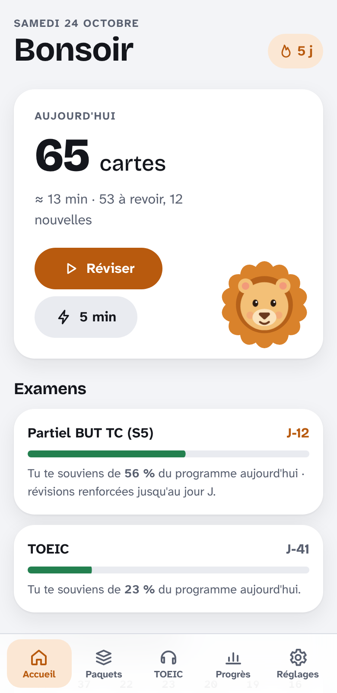
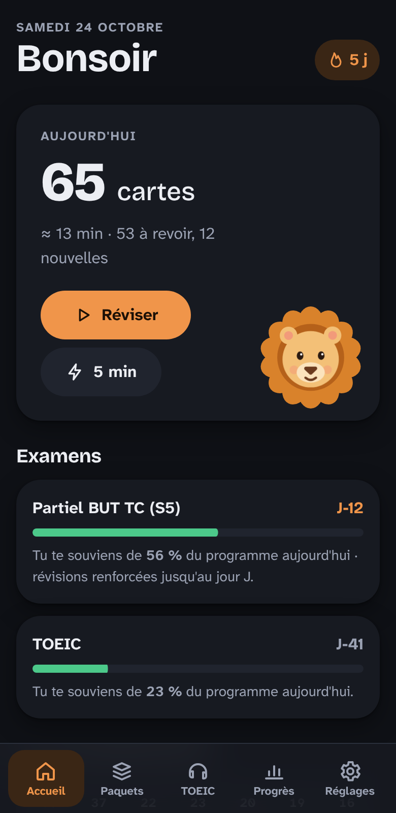
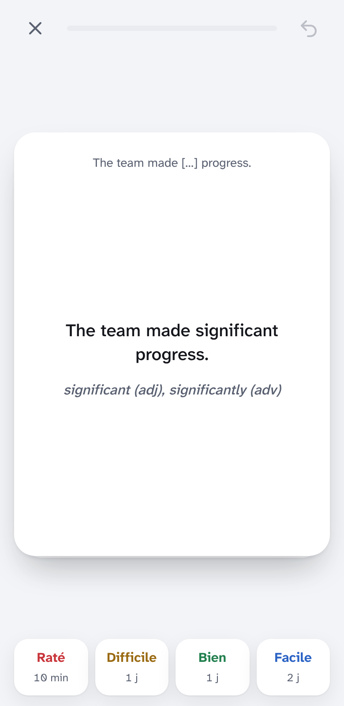
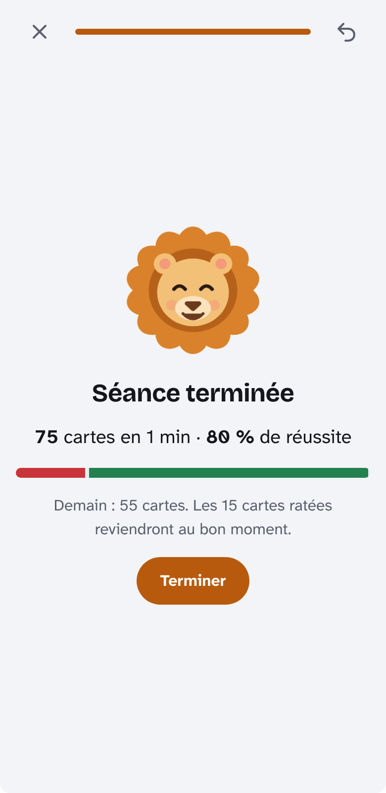
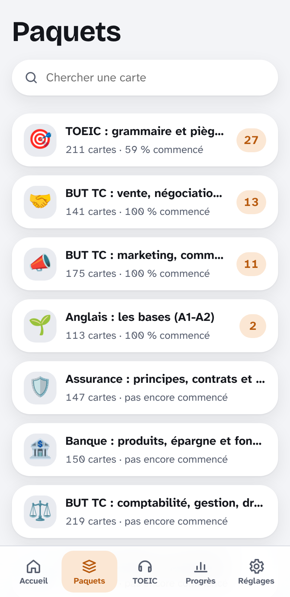
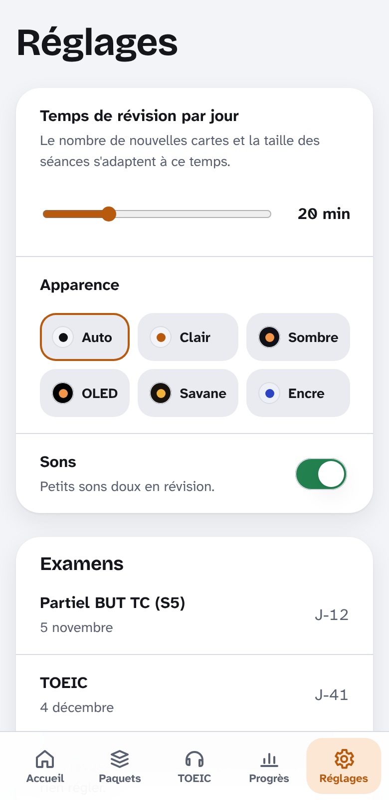
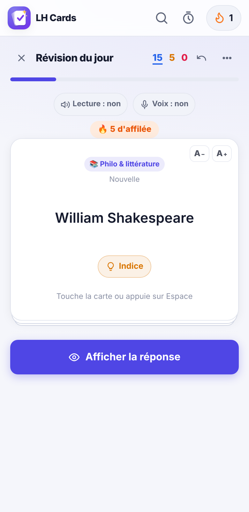

<title>Refonte LH Cards</title>
<meta name="claude:viewport-fit-sides" content="cover">
<link rel="preconnect" href="https://fonts.googleapis.com"><link rel="preconnect" href="https://fonts.gstatic.com" crossorigin>
<link rel="stylesheet" href="https://fonts.googleapis.com/css2?family=Atkinson+Hyperlegible+Next:ital,wght@0,400;0,700;1,400&family=Bricolage+Grotesque:opsz,wght@12..96,600;12..96,800&display=swap">
<style>/* Une colonne de lecture (≈ 70 caractères) ; les tableaux défilent dans leur cadre ; mêmes jetons que l'appli. */
:root {
    --bg: #f3f4f7; --surface: #ffffff; --surface-2: #e9ebf0; --fg: #14161c; --muted: #596070; --line: #d8dbe3; --accent: #b85a0e; --accent-soft: #fbe7d4; --on-accent: #ffffff; --code: #eef0f4;
    --font-display: "Bricolage Grotesque", ui-rounded, system-ui, sans-serif; --font-body: "Atkinson Hyperlegible Next", "Atkinson Hyperlegible", system-ui, -apple-system, "Segoe UI", sans-serif;
    --font-mono: ui-monospace, "SF Mono", Menlo, Consolas, monospace;
}
@media (prefers-color-scheme: dark) { :root:not([data-theme="light"]) { --bg: #0f1116; --surface: #171a21; --surface-2: #20242e; --fg: #eceef3; --muted: #9ba2b3; --line: #2a2f3b; --accent: #f0954a; --accent-soft: #3a2615; --on-accent: #1b1006; --code: #1d2129; color-scheme: dark; } }
:root[data-theme="dark"] { --bg: #0f1116; --surface: #171a21; --surface-2: #20242e; --fg: #eceef3; --muted: #9ba2b3; --line: #2a2f3b; --accent: #f0954a; --accent-soft: #3a2615; --on-accent: #1b1006; --code: #1d2129; color-scheme: dark; }
* { box-sizing: border-box; }
body { margin: 0; background: var(--bg); color: var(--fg); font: 400 17px/1.6 var(--font-body); -webkit-font-smoothing: antialiased; }
.doc { max-width: 820px; margin: 0 auto; padding-block: 40px 96px; padding-left: max(16px, env(safe-area-inset-left, 0px)); padding-right: max(16px, env(safe-area-inset-right, 0px)); }
h1, h2, h3 { font-family: var(--font-display); line-height: 1.15; text-wrap: balance; letter-spacing: -.01em; }
h1 { font-size: clamp(2.2rem, 7vw, 3.4rem); font-weight: 800; margin: 24px 0 8px; }
h2 { font-size: clamp(1.45rem, 4vw, 1.9rem); font-weight: 800; margin: 56px 0 14px; padding-top: 16px; border-top: 2px solid var(--fg); }
h3 { font-size: 1.2rem; font-weight: 600; margin: 32px 0 10px; }
p, li { max-width: 70ch; }
a { color: var(--accent); text-underline-offset: 3px; }
strong { font-weight: 700; }
hr { border: 0; height: 0; margin: 8px 0; }
blockquote { margin: 16px 0; padding: 14px 18px; background: var(--accent-soft); border-radius: 14px; }
blockquote p { margin: 0; }
code { font-family: var(--font-mono); font-size: .86em; background: var(--code); padding: .1em .35em; border-radius: 5px; }
pre { background: var(--code); border-radius: 14px; padding: 16px; overflow-x: auto; font-size: .85rem; line-height: 1.5; }
pre code { background: none; padding: 0; }
.tw { overflow-x: auto; margin: 16px 0; background: var(--surface); border-radius: 14px; }
table { border-collapse: collapse; width: 100%; font-size: .9rem; line-height: 1.45; font-variant-numeric: tabular-nums; }
th, td { text-align: left; vertical-align: top; padding: 10px 12px; border-bottom: 1px solid var(--line); min-width: 90px; }
th { font-size: .78rem; text-transform: uppercase; letter-spacing: .05em; color: var(--muted); font-weight: 700; }
tr:last-child td { border-bottom: 0; }
td:first-child { min-width: 180px; }
.links { display: flex; flex-wrap: wrap; gap: 10px; }
.links a { display: inline-flex; align-items: center; min-height: 48px; padding: 0 20px; border-radius: 999px; font-weight: 700; text-decoration: none; background: var(--surface-2); color: var(--fg); }
.links a.cta { background: var(--accent); color: var(--on-accent); }
.links a:focus-visible, a:focus-visible { outline: 3px solid var(--accent); outline-offset: 2px; }
.gallery h2 { margin-top: 48px; }
.shots { display: grid; grid-template-columns: repeat(auto-fill, minmax(150px, 1fr)); gap: 14px; }
figure { margin: 0; display: grid; gap: 6px; }
figure img { width: 100%; height: auto; max-width: 100%; border-radius: 14px; border: 1px solid var(--line); background: var(--surface); }
figcaption { font-size: .82rem; color: var(--muted); }
</style>
<main class="doc"><nav class="links" aria-label="Prototypes"><a class="cta" href="https://claude.ai/artifact/MbYcxQVkexzSk7mbeFP7xJ" target="_blank" rel="noopener">Ouvrir le prototype jouable</a><a href="sim/index.html">Ouvrir le simulateur</a></nav><h1>LH Cards — refonte complète</h1>
<p><em>Rapport de conception, prototypes et mesures. Octobre 2026.</em></p>
<blockquote>
<p><strong>Ce que j&#39;ai vu et ce que je n&#39;ai pas vu.</strong> J&#39;ai lu le dépôt (branche <code>claude/ecstatic-edison-4i6b1u</code>, 12 476 lignes de code source), construit l&#39;application, ouvert la version en ligne (identique octet pour octet au fichier <code>index.html</code> du dépôt) et je l&#39;ai fait tourner dans Chromium (Playwright) en 390 × 800 et 1280 × 800, avec processeur ralenti ×4. Je n&#39;ai <strong>pas</strong> d&#39;iPhone : tout ce qui touche à Safari iOS est marqué « à vérifier sur iPhone » et la section 3.9 dit comment le vérifier. Tout ce qui est chiffré ici a été mesuré, sauf mention « estimé ».</p>
</blockquote>
<hr>
<h2>1. Synthèse</h2>
<p><strong>Vision.</strong> <em>Ouvre, révise, c&#39;est fait : LH Cards décide quoi, quand et combien, et ne perd jamais rien.</em> Un seul réglage (le temps par jour), tout le reste se règle seul à partir de l&#39;historique de l&#39;élève.</p>
<p><strong>Les 5 décisions structurantes</strong></p>
<ol>
<li><strong>Svelte 5 + TypeScript + Vite</strong>, découpé par écran (32 Ko gzip de JavaScript au démarrage, mesuré, contre 2,9 Mo aujourd&#39;hui).</li>
<li><strong>Un moteur de révision pur et testé</strong> : FSRS-6 identique à la référence officielle py-fsrs 6.3.2 (écart &lt; 10⁻⁹ sur 1 052 révisions), file du jour automatique à partir d&#39;un budget de temps, optimiseur avec garde-fous, calibration en boucle fermée, mode examen.</li>
<li><strong>Stockage par enregistrement</strong> dans IndexedDB : une notation écrit 1 carte + 1 ligne d&#39;historique (≈ 1 Ko) dans une transaction, au lieu de re-sérialiser tout l&#39;état (4 Mo à volume réel). L&#39;historique devient la source de vérité et n&#39;est plus jamais tronqué.</li>
<li><strong>Mises à jour sans surprise</strong> : la nouvelle version s&#39;installe en arrière-plan et s&#39;applique au lancement suivant. Plus aucun rechargement automatique pendant l&#39;utilisation.</li>
<li><strong>Animation au compositeur uniquement</strong> (<code>transform</code>/<code>opacity</code>), 4 durées et 3 courbes en jetons, View Transitions pour les changements d&#39;onglet ; Léo en image fixe animée par transformations, et de courtes vidéos alpha seulement pour les moments rares.</li>
</ol>
<p><strong>Les 3 plus gros gains attendus (mesurés sur prototype vs application actuelle, Chromium, CPU ×4)</strong></p>
<ul>
<li><strong>Relance de l&#39;appli : ≈ 0,4 s au lieu de ≈ 2,3 s</strong> jusqu&#39;à l&#39;accueil utilisable (×5,5, médiane de 3 passages). Poids d&#39;une relance : ≈ 105 Ko au lieu de 2,9 Mo.</li>
<li><strong>Écrans 8 à 10 fois plus légers</strong> : 175 éléments DOM à l&#39;accueil au lieu de 1 784 ; <strong>aucune</strong> tâche longue sur 45 notes en révision (l&#39;application actuelle bloque 151 à 231 ms après chaque note pour re-sérialiser 4 Mo à volume réel).</li>
<li><strong>Révision mieux réglée sans rien toucher</strong> : en simulation sur un an, rétention obtenue 90,6 % pour 90,3 % visée et pic de charge à 33 min après 2 semaines d&#39;absence, contre 88,0 % et un pic à 57 min avec la logique actuelle (20 nouvelles/jour fixes).</li>
</ul>
<p><strong>Ambitieux vs raisonnable.</strong> Version ambitieuse : tout réécrire en ≈ 43 jours de développement (≈ 9 semaines). Version raisonnable (4 semaines, un développeur) : correctifs immédiats dans l&#39;appli actuelle (2 jours) puis nouvelle appli pour le chemin quotidien (accueil, révision, paquets, progrès, réglages, migration) ; le TOEIC reste dans l&#39;ancienne version, accessible par un lien, jusqu&#39;au jalon 4.</p>
<p><strong>Refonte ou améliorations ?</strong> Les causes des deux bugs les plus visibles se corrigent en quelques heures dans le code actuel (je les donne en 3.8, « Phase 0 »), <strong>faites-le d&#39;abord, quoi qu&#39;on décide</strong>. Mais la fluidité « parfaite » ne s&#39;obtient pas par retouches : le rendu par chaînes HTML de 1 200 à 1 700 éléments, la classe de 4 142 lignes et 2 098 lignes de CSS en couches sont la cause structurelle des saccades et du risque à chaque ajout. Mon avis : <strong>correctifs immédiats + réécriture parallèle et progressive</strong>, pas un remplacement en un seul coup.</p>
<hr>
<h2>2. Diagnostic de l&#39;application actuelle (preuves)</h2>
<p>Avant de proposer, j&#39;ai cherché les causes des problèmes ressentis. Chacune est vérifiable dans le code ou par la mesure.</p>
<div class="tw"><table>
<thead>
<tr>
<th>Problème ressenti</th>
<th>Cause trouvée</th>
<th>Preuve</th>
</tr>
</thead>
<tbody><tr>
<td>« Se relance deux fois »</td>
<td>Le service worker sert l&#39;ancien <code>index.html</code> depuis le cache (instantané) et télécharge le nouveau en arrière-plan ; <strong>4 s après le démarrage</strong>, <code>boot.js</code> lit <code>version.json</code>, voit une version plus récente, vide le cache et fait <code>location.reload()</code>. Après chaque déploiement, le premier lancement est donc toujours suivi d&#39;un rechargement.</td>
<td><code>src/boot.js</code> lignes 9-25 ; <code>sw.template.js</code> (stratégie « cache puis réseau » sur <code>index.html</code>) ; <code>src/extras.js:418</code> (deuxième chemin de rechargement)</td>
</tr>
<tr>
<td>Saccades à l&#39;ouverture des onglets</td>
<td>Chaque onglet est reconstruit d&#39;un bloc par <code>innerHTML</code> : 1 155 à 1 500 éléments par écran. Premier affichage mesuré entre 111 et 261 ms (médianes) avec CPU ×4, avec des tâches bloquantes de 82 à 245 ms ; lors de la toute première mesure (onglet Paquets juste après le démarrage), 1 023 ms dont une tâche de 973 ms. Un pré-rendu « à l&#39;inactivité » (<code>warmViews</code>) peut tomber pendant un toucher.</td>
<td><code>src/app.js:1254</code> (<code>go</code>), <code>:802-821</code> ; mesures §Annexe D</td>
</tr>
<tr>
<td>Micro-gels en révision</td>
<td>Chaque note appelle <code>save()</code> : 250 ms plus tard, <strong>tout l&#39;état est re-sérialisé</strong> (cartes, historique, médias en base64) et réécrit en un seul bloc. Avec 3 700 cartes et 40 000 lignes d&#39;historique : 4 055 Ko, 151-231 ms de sérialisation + 71-675 ms d&#39;écriture, CPU ×4 (15 mesures). Cela tombe pendant l&#39;animation de la carte suivante.</td>
<td><code>src/app.js:943-964</code>, <code>:901-904</code> ; <code>refonte/bench/save-cost.js</code></td>
</tr>
<tr>
<td>Risque de perte de données</td>
<td>L&#39;historique de révision est <strong>tronqué à 40 000 lignes</strong> (<code>REVLOG_MAX</code>) : à ≈ 110 révisions/jour, l&#39;historique d&#39;il y a plus d&#39;un an disparaît sans prévenir, et avec lui la matière de l&#39;optimiseur FSRS.</td>
<td><code>src/app.js:329</code>, <code>:1200-1201</code></td>
</tr>
<tr>
<td>Délais pas toujours « justes »</td>
<td>Le planificateur par défaut est encore <strong>SM-2</strong> (FSRS-5 seulement si on l&#39;active par préréglage) ; nouvelles cartes à nombre fixe (20/jour), sans tenir compte de la charge future.</td>
<td><code>src/app.js:288</code> (<code>scheduler: &#39;sm2&#39;</code> par défaut)</td>
</tr>
<tr>
<td>Poids</td>
<td>Un seul fichier de 2,9 Mo (1,9 Mo de données dont 1,1 Mo de photos TOEIC et 251 Ko de banque TOEIC chargés à chaque démarrage) + 21 Mo d&#39;animations de Léo en WebP animé (≈ 1 Mo par geste, 1,7 Mo pour l&#39;attente).</td>
<td><code>ls -la src/ mascot/</code></td>
</tr>
</tbody></table></div>
<hr>
<section class="gallery" aria-label="Captures"><h2 id="captures">Captures (390 × 800)</h2><div class="shots"><figure><figcaption>Accueil (prototype, clair)</figcaption></figure><figure><figcaption>Accueil (prototype, sombre)</figcaption></figure><figure><figcaption>Révision : réponse</figcaption></figure><figure><figcaption>Fin de séance</figcaption></figure><figure><figcaption>Paquets</figcaption></figure><figure><figcaption>Réglages</figcaption></figure><figure><figcaption>Accueil actuel</figcaption></figure><figure><figcaption>Révision actuelle</figcaption></figure></div></section><h2>3.1 Vision et principes</h2>
<p><strong>Promesse :</strong> <em>Ouvre, révise, c&#39;est fait : LH Cards décide quoi, quand et combien, et ne perd jamais rien.</em></p>
<p><strong>7 principes non négociables</strong>, chacun avec sa mesure :</p>
<div class="tw"><table>
<thead>
<tr>
<th>#</th>
<th>Principe</th>
<th>Ce que ça veut dire</th>
<th>Mesure qui le contredirait</th>
</tr>
</thead>
<tbody><tr>
<td>1</td>
<td><strong>Zéro attente perçue</strong></td>
<td>L&#39;accueil est utilisable avant que l&#39;œil ait fini de se poser.</td>
<td>Relance &gt; 1 s sur iPhone ; changement d&#39;onglet &gt; 100 ms</td>
</tr>
<tr>
<td>2</td>
<td><strong>La révision est sacrée</strong></td>
<td>Plein écran, rien d&#39;autre que la carte : ni Léo, ni bannière, ni enregistrement visible, ni tâche longue.</td>
<td>Une tâche &gt; 50 ms pendant une séance</td>
</tr>
<tr>
<td>3</td>
<td><strong>Les réglages par défaut sont les bons</strong></td>
<td>Un seul réglage d&#39;étude : le temps par jour. Délais, nouvelles cartes, rétention, paramètres FSRS : automatiques.</td>
<td>Rétention simulée hors de ± 2 points de la cible ; un utilisateur qui doit ouvrir les réglages pour réviser</td>
</tr>
<tr>
<td>4</td>
<td><strong>Jamais de perte de données</strong></td>
<td>L&#39;historique est la source de vérité, en ajout seul ; chaque écriture est atomique ; migration vérifiée ligne à ligne.</td>
<td>1 seul échec sur les scénarios de test de perte</td>
</tr>
<tr>
<td>5</td>
<td><strong>Tout mouvement a un sens</strong></td>
<td>Une animation montre d&#39;où vient ou où va quelque chose, ou confirme une action. Seulement <code>transform</code> et <code>opacity</code>.</td>
<td>Une animation sans rôle listé au catalogue ; une image perdue à 60 i/s</td>
</tr>
<tr>
<td>6</td>
<td><strong>Un geste, une action</strong></td>
<td>Les actions fréquentes sont à 1 ou 2 touchers du lancement.</td>
<td>Parcours clés au-delà des comptes du §3.3</td>
</tr>
<tr>
<td>7</td>
<td><strong>Accessible par défaut</strong></td>
<td>Contraste AA vérifié par calcul, cibles ≥ 44 px, mouvement réduit, VoiceOver, clavier.</td>
<td><code>npm run contrast</code> en échec ; une cible &lt; 44 px</td>
</tr>
</tbody></table></div>
<h3>Inventaire : garder, fusionner, retirer, automatiser</h3>
<div class="tw"><table>
<thead>
<tr>
<th>Fonction actuelle</th>
<th>Décision</th>
<th>Raison</th>
</tr>
</thead>
<tbody><tr>
<td>FSRS-5 + optimiseur</td>
<td><strong>Garder, mettre à jour</strong> en FSRS-6</td>
<td>Meilleur modèle (décroissance de l&#39;oubli apprise, w20), optimiseur automatique mensuel</td>
</tr>
<tr>
<td>SM-2 en alternative</td>
<td><strong>Retirer</strong></td>
<td>Deux planificateurs = deux comportements à tester. Les cartes SM-2 sont converties à la migration</td>
</tr>
<tr>
<td>Options par paquet, préréglages</td>
<td><strong>Retirer</strong></td>
<td>Remplacées par l&#39;adaptation automatique ; la seule différence légitime entre paquets (un examen) passe par les objectifs d&#39;examen</td>
</tr>
<tr>
<td>Étapes d&#39;apprentissage</td>
<td><strong>Automatiser</strong></td>
<td>Raté → revoir dans la séance après 3-5 cartes ; Bien → jours (court terme FSRS-6). Pas de réglage</td>
</tr>
<tr>
<td>Sangsues</td>
<td><strong>Garder, adoucir</strong></td>
<td>Détectées à 6 oublis ; plus de suspension silencieuse : liste « à reformuler » proposée</td>
</tr>
<tr>
<td>Enfouissement des cartes sœurs</td>
<td><strong>Automatiser</strong></td>
<td>Toujours actif : une carte par note et par jour</td>
</tr>
<tr>
<td>Équilibrage de charge, « jours faciles »</td>
<td><strong>Fusionner, automatiser</strong></td>
<td>Toujours actif dans le choix du jour ; les jours légers deviennent une préférence de semaine facultative</td>
</tr>
<tr>
<td>Annuler / rétablir</td>
<td><strong>Garder</strong> (annuler seulement)</td>
<td>Annuler la dernière note (bouton + ⌘Z). « Rétablir » sert peu en révision</td>
</tr>
<tr>
<td>Modes quiz, écriture, chrono</td>
<td><strong>Fusionner</strong></td>
<td>Deviennent des <strong>types de réponse</strong> d&#39;une carte (QCM, saisie) dans la séance normale ; le chrono disparaît (pression sans valeur d&#39;apprentissage)</td>
</tr>
<tr>
<td>Révisions personnalisées, paquets filtrés</td>
<td><strong>Fusionner</strong></td>
<td>« Réviser ce paquet », « Réviser pour cet examen », « Refaire mes erreurs » : trois boutons couvrent 95 % des usages</td>
</tr>
<tr>
<td>Objectifs d&#39;examen J-x</td>
<td><strong>Garder, renforcer</strong></td>
<td>Pilotent la rétention visée et la préparation affichée</td>
</tr>
<tr>
<td>Paquets et sous-paquets</td>
<td><strong>Garder</strong></td>
<td>Deux niveaux maximum (matière › chapitre)</td>
</tr>
<tr>
<td>Bibliothèque de paquets</td>
<td><strong>Garder</strong></td>
<td>Chargée à la demande (pas au démarrage)</td>
</tr>
<tr>
<td>Trous, inversées, occlusion d&#39;image</td>
<td><strong>Garder</strong></td>
<td>Types de note standard</td>
</tr>
<tr>
<td>Types de notes personnalisés</td>
<td><strong>Retirer de l&#39;interface</strong></td>
<td>Usage marginal ; conservés à la migration sous forme rendue (recto/verso figés)</td>
</tr>
<tr>
<td>Édition riche</td>
<td><strong>Garder, simplifier</strong></td>
<td>Gras, italique, liste, image, son. Pas de couleurs libres</td>
</tr>
<tr>
<td>Recherche à la Anki</td>
<td><strong>Simplifier</strong></td>
<td>Recherche plein texte instantanée + filtres en puces (paquet, état, drapeau). Syntaxe avancée retirée</td>
</tr>
<tr>
<td>Édition en masse</td>
<td><strong>Garder</strong> (déplacer, suspendre, supprimer)</td>
<td>Sélection dans la liste virtualisée</td>
</tr>
<tr>
<td>Import/export JSON, CSV, <code>.apkg</code></td>
<td><strong>Garder</strong> JSON + CSV ; <code>.apkg</code> <strong>reporter</strong> (import seul au jalon 3)</td>
<td>L&#39;export <code>.apkg</code> (300 lignes) sert surtout à quitter l&#39;appli ; à reprendre si demandé</td>
</tr>
<tr>
<td>Corbeille 30 jours</td>
<td><strong>Garder</strong></td>
<td>Filet de sécurité gratuit</td>
</tr>
<tr>
<td>Sauvegardes automatiques (14 copies en base)</td>
<td><strong>Remplacer</strong></td>
<td>7 instantanés quotidiens légers + rappel d&#39;export hebdomadaire vers Fichiers/iCloud (un toucher)</td>
</tr>
<tr>
<td>Banque TOEIC, mini-test, test complet, erreurs, photos</td>
<td><strong>Garder</strong></td>
<td>Chargée à la demande ; les erreurs deviennent des cartes</td>
</tr>
<tr>
<td>Statistiques façon Anki</td>
<td><strong>Réduire</strong> à 4 réponses</td>
<td>Est-ce que je retiens ? Combien je travaille ? Qu&#39;est-ce qui arrive ? Où j&#39;en suis par matière ?</td>
</tr>
<tr>
<td>Série + gel de série</td>
<td><strong>Garder la série, automatiser le gel</strong></td>
<td>1 jour manqué par semaine ne casse pas la série ; plus de stock de « gels » à gérer</td>
</tr>
<tr>
<td>Bilan du jour</td>
<td><strong>Fusionner</strong> dans l&#39;écran de fin de séance</td>
<td></td>
</tr>
<tr>
<td>Sons de l&#39;appli</td>
<td><strong>Garder</strong> (4 sons)</td>
<td>Retourner, noter, fin ; synthétisés, 0 octet à charger</td>
</tr>
<tr>
<td>Mixeur d&#39;ambiance (16 sons, 4 Mo)</td>
<td><strong>Reporter</strong> (module facultatif chargé à la demande)</td>
<td>Hors du cœur de l&#39;apprentissage ; 4 Mo</td>
</tr>
<tr>
<td>Minuteur de concentration</td>
<td><strong>Fusionner</strong></td>
<td>Le mode « 5 min » et le budget quotidien le remplacent</td>
</tr>
<tr>
<td>16 thèmes</td>
<td><strong>Réduire à 5 + Auto</strong></td>
<td>Clair, Sombre, OLED, Savane, Encre : chacun vérifié en contraste</td>
</tr>
<tr>
<td>Logo adaptatif</td>
<td><strong>Garder</strong></td>
<td>Une couleur d&#39;accent par thème</td>
</tr>
<tr>
<td>Synchro Supabase (désactivée)</td>
<td><strong>Retirer</strong></td>
<td>Non utilisée ; voir §3.2 pour une synchro future</td>
</tr>
<tr>
<td>Mode voix</td>
<td><strong>Reporter</strong></td>
<td>Voir §3.6</td>
</tr>
<tr>
<td>Léo (21 vidéos, 180 phrases, voix)</td>
<td><strong>Garder, refaire le pipeline</strong></td>
<td>Voir §3.4 : ≈ 1,5 Mo au total au lieu de 21 Mo</td>
</tr>
</tbody></table></div>
<hr>
<h2>3.2 Architecture technique cible</h2>
<h3>Choix de la pile</h3>
<div class="tw"><table>
<thead>
<tr>
<th>Critère</th>
<th>Vanilla + Web Components (Lit)</th>
<th>Preact + Signals</th>
<th><strong>Svelte 5 (choisi)</strong></th>
<th>React 19</th>
</tr>
</thead>
<tbody><tr>
<td>Poids du moteur de rendu (gzip)</td>
<td>≈ 6 Ko</td>
<td>≈ 6 Ko</td>
<td>≈ 10-15 Ko selon les fonctions utilisées</td>
<td>≈ 60 Ko (react + react-dom)</td>
</tr>
<tr>
<td>Poids mesuré du prototype complet au démarrage</td>
<td>—</td>
<td>—</td>
<td><strong>32 Ko JS + 4,8 Ko CSS gzip</strong> (moteur FSRS, état, 3 écrans compris)</td>
<td>—</td>
</tr>
<tr>
<td>Démarrage sur iPhone milieu de gamme (estimé)</td>
<td>très bon</td>
<td>très bon</td>
<td>très bon (compilé, pas de DOM virtuel)</td>
<td>moyen (hydratation + DOM virtuel)</td>
</tr>
<tr>
<td>Mises à jour fines (une carte change → un nœud change)</td>
<td>à la main</td>
<td>oui (signaux)</td>
<td><strong>oui, natif</strong> (runes <code>$state</code>/<code>$derived</code>)</td>
<td>non (re-rendu du composant)</td>
</tr>
<tr>
<td>CSS isolé par composant</td>
<td>Shadow DOM (contraignant pour les thèmes)</td>
<td>non (outil en plus)</td>
<td><strong>oui, natif</strong></td>
<td>non (outil en plus)</td>
</tr>
<tr>
<td>Transitions/animations intégrées</td>
<td>non</td>
<td>non</td>
<td><strong>oui</strong> (<code>transition:</code>, <code>animate:</code>)</td>
<td>non</td>
</tr>
<tr>
<td>Maintenance par un étudiant aidé d&#39;une IA</td>
<td>moyenne (beaucoup de code « plomberie »)</td>
<td>bonne</td>
<td><strong>bonne</strong> (fichiers lisibles, peu de code)</td>
<td>bonne mais lourde</td>
</tr>
<tr>
<td>Risque</td>
<td>faible</td>
<td>faible</td>
<td>faible (v5 stable depuis 2024)</td>
<td>faible</td>
</tr>
</tbody></table></div>
<p><strong>Décision : Svelte 5 + TypeScript + Vite.</strong> Trois raisons mesurables : (1) le poids — tout le prototype démarre avec 32 Ko gzip ; (2) le <strong>CSS isolé par composant</strong> supprime à la racine le problème des « couches de CSS » (2 098 lignes globales aujourd&#39;hui) ; (3) la réactivité fine supprime la reconstruction d&#39;écrans par <code>innerHTML</code>. TypeScript attrape les erreurs de forme de données, ce qui compte pour la migration. Le moteur de révision reste en TypeScript pur, sans dépendance à Svelte.</p>
<h3>Modèle de données (schéma v1)</h3>
<p>L&#39;historique est <strong>la source de vérité</strong> ; l&#39;état de chaque carte n&#39;est qu&#39;un cache recalculable en rejouant l&#39;historique (<code>replay</code>, testé).</p>
<pre><code class="language-text">decks    { id, name, emoji, parent|null, created, mod }
notes    { id, type: basique|inversee|trous|image|perso, fields{…}, tags[], created, mod }
cards    { id, noteId, deckId, ord, front, back,           ← rendu figé (fidélité de migration)
           flag, marked, suspended, buriedUntil,
           sched { phase: new|learning|review|relearning, s, d, due, last, reps, lapses },
           origin: historique|fsrs|sm2|nouvelle, created, mod }
revlog   (ajout seul) { card, t, g(1-4), phase, elapsed(j), ivl(j), s, d, ms }   index: card
goals    { id, name, date, deckIds[] }
media    { hash → Blob }                                    ← plus de base64 dans l&#39;état
meta     { schema, settings{ ambiance, budgetMin, sons, w[21] }, legacy, snapshots }
</code></pre>
<p><strong>Stockage : IndexedDB, une table par type, écritures unitaires.</strong> Comparaison :</p>
<div class="tw"><table>
<thead>
<tr>
<th>Option</th>
<th>Pour</th>
<th>Contre</th>
<th>Décision</th>
</tr>
</thead>
<tbody><tr>
<td>IndexedDB par enregistrement</td>
<td>Natif, 0 Ko, transactions, index ; Safari 16.4+ stable</td>
<td>API verbeuse (une couche de 90 lignes suffit : <code>src/data/db.ts</code>)</td>
<td><strong>Choisi</strong></td>
</tr>
<tr>
<td>SQLite WASM sur OPFS</td>
<td>Requêtes SQL, très robuste</td>
<td>≈ 900 Ko de WASM, accès OPFS synchrone seulement en Worker, gain nul à 4 000 cartes</td>
<td>Refusé</td>
</tr>
<tr>
<td>Un seul JSON (actuel)</td>
<td>Simple</td>
<td>4 Mo réécrits à chaque note, risque de corruption totale</td>
<td>Abandonné</td>
</tr>
</tbody></table></div>
<p><strong>Migrations versionnées</strong> : <code>db.ts</code> contient <code>upgrade(db, from)</code> ; chaque version ajoute ses tables/index, n&#39;en supprime jamais. Les migrations de <em>contenu</em> (ex. format v6 → v1) sont des fonctions pures testées (<code>src/data/migrate.ts</code>).</p>
<p><strong>Sauvegarde hors appareil</strong> : bouton « Exporter » → feuille de partage iOS (<code>navigator.share</code> avec un fichier) → « Enregistrer dans Fichiers » (iCloud Drive). Rappel discret une fois par semaine sur l&#39;accueil. Le fichier exporté est relu et vérifié avant d&#39;afficher « Exporté ».</p>
<p><strong>Synchronisation</strong> : <strong>non au jalon 1-6</strong> (l&#39;utilisateur a choisi l&#39;export manuel). Si elle vient : chiffrement de bout en bout (clé dérivée d&#39;une phrase secrète, AES-GCM), historique fusionné par union (il est en ajout seul, donc sans conflit), état des cartes recalculé par rejeu, contenu des notes en « dernier modifié gagne » par champ.</p>
<p><strong>Stratégie « zéro perte »</strong> : (1) historique en ajout seul, jamais tronqué ; (2) une transaction par action ; (3) <code>navigator.storage.persist()</code> demandé dès la première révision (sur iPhone, une PWA installée est protégée de l&#39;effacement après 7 jours) ; (4) l&#39;ancien état reste stocké tel quel 30 jours après la migration ; (5) export vérifié par relecture ; (6) 7 instantanés quotidiens en base (≈ 300 Ko chacun sans médias).</p>
<h3>Moteur de révision séparé et testable</h3>
<p>Livré et testé dans <code>refonte/app/src/engine/</code> (détail au §3.5) :</p>
<div class="tw"><table>
<thead>
<tr>
<th>Fichier</th>
<th>Rôle</th>
<th>Tests</th>
</tr>
</thead>
<tbody><tr>
<td><code>fsrs.ts</code></td>
<td>Modèle FSRS-6 pur (21 paramètres)</td>
<td>Identique à py-fsrs 6.3.2 sur 1 052 révisions (écart &lt; 10⁻⁹)</td>
</tr>
<tr>
<td><code>scheduler.ts</code></td>
<td>Note → nouvel état : étapes, flou reproductible, équilibrage, examen, aperçu des boutons, rejeu</td>
<td>8 tests</td>
</tr>
<tr>
<td><code>queue.ts</code></td>
<td>File du jour, nouvelles cartes adaptatives, retard sans avalanche, rétention visée, calibration</td>
<td>7 tests</td>
</tr>
<tr>
<td><code>optimizer.ts</code></td>
<td>Ajustement des 21 paramètres sur l&#39;historique, validation croisée</td>
<td>1 test (retrouve les paramètres d&#39;un élève simulé)</td>
</tr>
<tr>
<td><code>simulate.ts</code></td>
<td>Élève virtuel, 1 000 cartes, 365 jours</td>
<td>1 test (rétention ± 2 points, budget tenu)</td>
</tr>
</tbody></table></div>
<h3>Rendu : des changements d&#39;écran instantanés</h3>
<ul>
<li><strong>Pas de reconstruction massive</strong> : Svelte met à jour les nœuds concernés ; un écran fait 65 à 167 éléments (mesuré) au lieu de 1 155 à 1 500.</li>
<li><strong>Virtualisation</strong> : toute liste longue (cartes, résultats de recherche) n&#39;a que les lignes visibles + 6 de marge dans le DOM (<code>VirtualList.svelte</code>) : 3 700 cartes → ≈ 25 lignes.</li>
<li><strong>Découpage par écran</strong> : Progrès, TOEIC, Révision sont des morceaux séparés, <strong>préchargés à l&#39;inactivité</strong> après le démarrage ; la bibliothèque et la banque TOEIC ne sont chargées qu&#39;à leur première ouverture.</li>
<li><strong>Transitions sur le compositeur</strong> : <code>transform</code>/<code>opacity</code> seulement ; View Transitions API (Safari 18+, Chrome) pour les onglets, avec repli CSS.</li>
<li><strong>Calculs dérivés mémorisés</strong> : la file du jour et les statistiques sont des <code>$derived</code> recalculés une fois par modification, pas à chaque affichage.</li>
<li><strong>Optimiseur en Web Worker</strong> une fois par mois, jamais pendant une séance.</li>
</ul>
<h3>Performance : budget chiffré</h3>
<div class="tw"><table>
<thead>
<tr>
<th>Mesure</th>
<th>Budget</th>
<th>Prototype (mesuré, Chromium CPU ×4)</th>
<th>Actuel</th>
</tr>
</thead>
<tbody><tr>
<td>JavaScript initial (gzip)</td>
<td>≤ 60 Ko</td>
<td>32 Ko</td>
<td>1,4 Mo (fichier unique : 2,9 Mo brut, 1,39 Mo gzip, données comprises)</td>
</tr>
<tr>
<td>CSS initial (gzip)</td>
<td>≤ 10 Ko</td>
<td>4,8 Ko</td>
<td>inclus dans le fichier unique</td>
</tr>
<tr>
<td>Relance → accueil utilisable</td>
<td>≤ 600 ms (iPhone : ≤ 1,2 s)</td>
<td>377 ms (2 089 cartes), 411 ms (3 700)</td>
<td>2 275 ms</td>
</tr>
<tr>
<td>Changement d&#39;onglet (toucher → 2ᵉ image)</td>
<td>≤ 100 ms</td>
<td>1er affichage 60-122 ms, retour 45-83 ms</td>
<td>1er affichage 87-261 ms, retour 53-189 ms</td>
</tr>
<tr>
<td>Tâche la plus longue en séance</td>
<td>≤ 50 ms</td>
<td>0 ms (45 notes)</td>
<td>médiane 82 ms, max 145 ms</td>
</tr>
<tr>
<td>Éléments DOM par écran</td>
<td>≤ 400</td>
<td>≤ 222 au total</td>
<td>1 155 à 1 670 par écran</td>
</tr>
<tr>
<td>Mémoire sous iOS</td>
<td>≤ 150 Mo</td>
<td>à mesurer sur iPhone</td>
<td>à mesurer</td>
</tr>
</tbody></table></div>
<p><strong>Chargement par paliers</strong> : (1) coquille HTML + couleur de fond du thème dès le premier octet ; (2) cœur (32 Ko) + données de l&#39;élève depuis IndexedDB ; (3) à l&#39;inactivité : écrans Révision, Progrès, TOEIC ; (4) à la demande : bibliothèque, banque TOEIC et photos, vidéos de Léo.</p>
<p><strong>Service worker sans surprise</strong> : pré-cache de la liste exacte des fichiers de la version (générée au build), <strong>sans <code>skipWaiting</code></strong> : une nouvelle version attend que l&#39;appli soit fermée et s&#39;applique au lancement suivant. Plus de <code>version.json</code> ni de <code>location.reload()</code>. Un petit point sur l&#39;icône Réglages signale « mise à jour prête ». Manifeste complet (<code>id</code>, icônes <code>any</code> et <code>maskable</code> séparées, couleurs, orientation).</p>
<h3>Qualité</h3>
<ul>
<li><strong>Arborescence</strong> : Annexe C. Un composant = un fichier <code>.svelte</code> avec son CSS ; le moteur ne dépend de rien.</li>
<li><strong>Conventions</strong> : TypeScript strict ; jetons de design obligatoires (aucune couleur ou durée en dur dans un composant, vérifiable par recherche) ; textes en français dans les composants ; commentaires en français.</li>
<li><strong>Tests</strong> : unitaires du moteur et de la migration (<code>npm test</code>, 20 tests + 1 facultatif, 4 s) ; e2e Playwright (parcours clés, aucun message d&#39;erreur) ; tests visuels (captures 390/1280 × clair/sombre comparées à des références) ; contrastes (<code>npm run contrast</code>).</li>
<li><strong>CI à chaque envoi</strong> : tests + build + <strong>banc de performance</strong> (<code>refonte/bench/measure.js</code>) qui échoue si un budget est dépassé de plus de 20 %.</li>
</ul>
<hr>
<h2>3.3 Design system et interface</h2>
<h3>Direction artistique</h3>
<p><strong>Une identité « carnet d&#39;étude, crinière safran ».</strong> Un gris très légèrement bleuté (papier de cahier, jamais crème), une seule couleur d&#39;accent — le <strong>safran de la crinière de Léo</strong> — réservée à l&#39;action principale (« Réviser ») et à l&#39;onglet actif. Les quatre couleurs de notation (rouge, ocre, vert, bleu) n&#39;apparaissent que sur les boutons de note et les barres de réussite : elles portent un sens, jamais une décoration.</p>
<ul>
<li><strong>Typographie</strong> : <em>Bricolage Grotesque</em> pour les titres et les chiffres (personnalité, chiffres larges pour « 65 cartes », « J-12 ») ; <em>Atkinson Hyperlegible Next</em> pour la lecture, dessinée par le Braille Institute pour distinguer les lettres ambiguës (I/l/1, O/0) : choix utile pour 3 700 cartes de vocabulaire. Échelle fixe à 7 tailles (Annexe A). En production : polices auto-hébergées et réduites aux caractères latins (≈ 2 × 25 Ko woff2).</li>
<li><strong>Formes</strong> : rayons 10 / 16 / 24 px ; une seule ombre douce pour les panneaux, une ombre plus profonde réservée à la carte de révision (c&#39;est l&#39;objet qu&#39;on manipule).</li>
<li><strong>Iconographie</strong> : un jeu unique au trait (24 px, trait 2 px, extrémités arrondies), en SVG dans le code ; pas d&#39;emoji dans l&#39;interface (les emoji restent comme « couverture » de paquet, choisis par l&#39;élève).</li>
<li><strong>Textures</strong> : aucune. La matière vient de Léo.</li>
</ul>
<p><strong>Thèmes : 5 + Auto</strong> (au lieu de 16), uniquement des redéfinitions de jetons de couleur :</p>
<div class="tw"><table>
<thead>
<tr>
<th>Thème</th>
<th>Usage</th>
<th>Plus faible contraste texte (calculé)</th>
</tr>
</thead>
<tbody><tr>
<td>Auto</td>
<td>suit le réglage clair/sombre de l&#39;iPhone</td>
<td>—</td>
</tr>
<tr>
<td>Clair</td>
<td>par défaut</td>
<td>4,66:1 (accent sur blanc)</td>
</tr>
<tr>
<td>Sombre</td>
<td>soir</td>
<td>6,07:1</td>
</tr>
<tr>
<td>OLED</td>
<td>noir pur, économise la batterie des iPhone OLED</td>
<td>6,70:1</td>
</tr>
<tr>
<td>Savane (signature)</td>
<td>crépuscule chaud, or de la crinière</td>
<td>6,83:1</td>
</tr>
<tr>
<td>Encre (signature)</td>
<td>papier bleuté, encre bleu nuit</td>
<td>5,20:1</td>
</tr>
</tbody></table></div>
<p>Les 55 paires texte/fond (5 thèmes × 11) sont vérifiées par <code>npm run contrast</code> : <strong>toutes ≥ 4,5:1 (WCAG AA)</strong>. Si l&#39;élève veut encore retirer des thèmes : supprimer un bloc de jetons, rien d&#39;autre.</p>
<h3>Maquettes écran par écran</h3>
<p>Les écrans marqués ▶ sont <strong>jouables dans le prototype</strong> (<code>refonte/proto/</code>) ; les autres sont spécifiés ci-dessous. Captures : <code>refonte/captures/</code>.</p>
<p><strong>▶ Accueil</strong> (téléphone : une colonne ; ordinateur : rail de navigation à gauche + colonne de 760 px)</p>
<ol>
<li>Date + salutation ; pastille de série (flamme + jours).</li>
<li><strong>Carte « Aujourd&#39;hui »</strong> : le nombre de cartes en très grand, la durée estimée (« ≈ 13 min · 53 à revoir, 12 nouvelles »), bouton <strong>Réviser</strong> (48 px de haut, accent plein) et bouton secondaire <strong>5 min</strong>. Léo à droite (salue une fois par jour, sinon respire). Si du retard existe : « 18 cartes en retard attendront demain : ta séance reste à 20 min. »</li>
<li><strong>Examens</strong> : nom, J-x, barre « tu te souviens de 56 % du programme », mention des révisions renforcées dans les 21 derniers jours.</li>
<li><strong>Les 7 prochains jours</strong> : petites colonnes de charge prévue.</li>
<li><strong>Ce que tu sais</strong> : « ≈ 1 240 cartes sur 3 700 » (somme des probabilités de rappel), lien vers Progrès.
États : tout fait (Léo fier, « Demain : 41 cartes ») ; premier lancement (onboarding) ; retard.</li>
</ol>
<p><strong>▶ Révision</strong> — plein écran, sans navigation. Barre du haut : Fermer (48 px), barre de progression fine, Annuler. Carte centrale (62 % de la hauteur, max 480 px) ; toucher = retourner. Après retournement, les 4 boutons montent (160 ms) avec le délai sous chacun (« 10 min · 2 j · 4 j · 9 j »). Gestes : glisser la carte retournée à droite = Bien, à gauche = Raté (seuil 90 px, étiquette qui apparaît progressivement). Clavier : Espace/Entrée, 1-4, ⌘Z, Échap. Sur ordinateur, même mise en page centrée à 640 px.</p>
<p><strong>▶ Fin de séance</strong> — Léo fier (petit bond), « 38 cartes en 11 min · 89 % de réussite », barre de répartition des notes qui se dessine, « Demain : 41 cartes. Les 4 cartes ratées reviendront au bon moment. », bouton Terminer.</p>
<p><strong>▶ Paquets</strong> — champ de recherche toujours visible (résultats instantanés, liste virtualisée) ; liste des matières avec nombre de cartes, % commencé, pastille des cartes dues ; toucher → chapitres + « Réviser ce paquet ». <em>Non prototypé :</em> bouton « + » (nouvelle carte), mode sélection (appui long) pour l&#39;édition en masse, bibliothèque à ajouter.</p>
<p><strong>Éditeur de carte</strong> (spécifié) — feuille qui monte du bas (téléphone) ou panneau latéral (ordinateur). Champs Recto / Verso / Indice, barre d&#39;outils minimale (gras, italique, liste, image, son, trou <code>[…]</code>). Aperçu de la carte en direct. Bouton « Enregistrer » ou « Enregistrer et suivante » (garde le paquet). Validation : recto vide = bouton grisé avec explication.</p>
<p><strong>▶ Progrès</strong> — 4 blocs : jauge « Tu te souviens : 88 % » (repère de l&#39;objectif à 90 %), « Ton travail » (30 jours), « Ce qui arrive » (14 jours), « Par matière ». Rien d&#39;autre.</p>
<p><strong>▶ TOEIC (entrée)</strong> — score estimé, 3 choix (mini-test 20 min, test complet 2 h, refaire mes erreurs), parties 1 à 7. <em>Examen en conditions réelles (spécifié)</em> : plein écran, minuteur discret en haut, audio joué une fois (bouton désactivé ensuite), navigation question par question, aucun son d&#39;interface, aucune animation sauf le passage de question (fondu 120 ms).</p>
<p><strong>Objectifs / examens</strong> — dans Réglages › Examens : nom, date, matières concernées. Effet automatique décrit en une phrase.</p>
<p><strong>▶ Réglages</strong> — 4 réglages : temps par jour (5 à 60 min), apparence (6 pastilles), sons, examens ; puis Sauvegarde (Exporter, Importer depuis l&#39;ancienne appli avec rapport de vérification). Tout le reste se règle seul ; la ligne du bas dit ce que fait le moteur.</p>
<p><strong>Onboarding</strong> (spécifié, 3 écrans maximum) — (1) Léo salue : « Je m&#39;occupe de quand réviser. Toi, tu révises. » ; (2) « Combien de temps par jour ? » (10 / 20 / 30 min, 20 présélectionné) ; (3) « Tu as un examen ? » (facultatif) ou « Importer mes cartes de l&#39;ancienne appli ». Ensuite, l&#39;accueil avec une première séance prête.</p>
<p><strong>États vides et erreurs</strong> — Paquet vide : « Ce paquet n&#39;a pas encore de carte » + « Ajouter une carte » / « Choisir dans la bibliothèque ». Recherche sans résultat : « Aucune carte ne contient “xyz” ». Stockage refusé (navigation privée) : bandeau persistant « Tes révisions ne seront pas gardées dans ce mode. Ouvre LH Cards depuis l&#39;écran d&#39;accueil. » Import invalide : rapport ligne par ligne, rien n&#39;est écrit (prototypé).</p>
<h3>Parcours clés mesurés en gestes</h3>
<div class="tw"><table>
<thead>
<tr>
<th>Parcours</th>
<th>Actuel (compté à la lecture du code, à confirmer sur iPhone)</th>
<th>Refonte (prototype ou spécification)</th>
</tr>
</thead>
<tbody><tr>
<td>Ouvrir et réviser 10 cartes</td>
<td>1 (icône) + attente écran de chargement + 1 (Réviser) + 10 × 2 = <strong>22</strong></td>
<td>1 + 1 + 10 × 2 = <strong>22</strong>, sans écran de chargement ; ou 1 + 1 + 10 × 2 en gestes (retourner + glisser) à une main</td>
</tr>
<tr>
<td>Ajouter une carte</td>
<td>Paquets › paquet › Ajouter › 2 champs › Enregistrer ≈ <strong>6</strong> + saisie</td>
<td>Paquets › « + » › 2 champs › Enregistrer = <strong>4</strong> + saisie (le dernier paquet est présélectionné)</td>
</tr>
<tr>
<td>Réviser avant un examen</td>
<td>Paramètres d&#39;objectif ou révision personnalisée ≈ <strong>5-7</strong></td>
<td>Accueil › ligne de l&#39;examen › Réviser = <strong>2</strong></td>
</tr>
<tr>
<td>Retrouver une carte</td>
<td>Paquets › recherche › saisie ≈ <strong>3</strong></td>
<td>Paquets › saisie (champ déjà visible) = <strong>2</strong></td>
</tr>
<tr>
<td>Voir sa progression</td>
<td><strong>1</strong></td>
<td><strong>1</strong></td>
</tr>
</tbody></table></div>
<h3>Accessibilité</h3>
<p>Mouvement réduit (jetons de durée ramenés à ≤ 160 ms, retournement remplacé par un fondu, Léo immobile) ; texte agrandi (tailles en <code>rem</code>, mises en page qui passent à la ligne, testées à 200 %) ; VoiceOver (rôles <code>dialog</code>, <code>progressbar</code>, <code>meter</code>, <code>radiogroup</code>, libellés en français sur chaque bouton-icône, annonces <code>aria-live</code> en fin de séance) ; clavier complet en révision (Espace, 1-4, ⌘Z, Échap) et focus visible de 3 px ; contrastes AA calculés ; cibles ≥ 48 px (barre d&#39;onglets 56 px, boutons de note 64 px).</p>
<hr>
<h2>3.4 Animation et « sensation »</h2>
<h3>Principes</h3>
<ol>
<li><strong>Ce qui bouge a une raison</strong> : montrer d&#39;où vient un élément, où il va, ou confirmer une action. Rien ne bouge « pour faire joli ».</li>
<li><strong>60 i/s ou rien</strong> : seulement <code>transform</code> et <code>opacity</code> (composés par le GPU) ; si une animation ne tient pas 60 i/s sur iPhone, elle est retirée, pas ralentie.</li>
<li><strong>Hiérarchie</strong> : une seule chose bouge à la fois au premier plan ; les mouvements secondaires (barres qui se remplissent) arrivent ensuite, décalés de 12 à 30 ms par élément.</li>
<li><strong>Entrer en douceur, sortir vite</strong> : ce qui arrive décélère (courbe <em>sortie</em>), ce qui part accélère et dure moins longtemps.</li>
<li><strong>Mouvement réduit respecté</strong>, batterie préservée : aucune animation en boucle hors de l&#39;accueil ; Léo s&#39;arrête quand l&#39;onglet est caché.</li>
</ol>
<h3>Jetons de mouvement</h3>
<div class="tw"><table>
<thead>
<tr>
<th>Jeton</th>
<th>Durée</th>
<th>Courbe</th>
<th>Usage</th>
</tr>
</thead>
<tbody><tr>
<td><code>instant</code></td>
<td>90 ms</td>
<td>sortie <code>cubic-bezier(.2,.8,.2,1)</code></td>
<td>retour d&#39;appui (bouton enfoncé à 97 %)</td>
</tr>
<tr>
<td><code>rapide</code></td>
<td>160 ms</td>
<td>sortie</td>
<td>changements d&#39;état locaux : onglet actif, apparition des boutons de note, interrupteurs</td>
</tr>
<tr>
<td><code>standard</code></td>
<td>260 ms</td>
<td>sortie / <em>ressort</em></td>
<td>changement d&#39;écran, retournement de carte, arrivée de la carte suivante</td>
</tr>
<tr>
<td><code>emphatique</code></td>
<td>480 ms</td>
<td>sortie / <em>ressort</em></td>
<td>moments rares : fin de séance, palier de série, barres qui se dessinent</td>
</tr>
<tr>
<td><em>entrée</em></td>
<td>—</td>
<td><code>cubic-bezier(.4,0,1,1)</code></td>
<td>ce qui quitte l&#39;écran (carte notée : 190 ms)</td>
</tr>
<tr>
<td><em>ressort</em></td>
<td>—</td>
<td><code>linear(…)</code> 9 points, dépassement 7 %</td>
<td>arrivées « vivantes » sans librairie</td>
</tr>
</tbody></table></div>
<h3>Catalogue des animations</h3>
<div class="tw"><table>
<thead>
<tr>
<th>Animation</th>
<th>Déclencheur</th>
<th>Durée / courbe</th>
<th>Propriétés</th>
<th>Rôle UX</th>
<th>Technique</th>
<th>Coût</th>
</tr>
</thead>
<tbody><tr>
<td>Changement d&#39;onglet</td>
<td>toucher un onglet</td>
<td>160 ms sortie de l&#39;ancien, 260 ms entrée (6 px)</td>
<td>opacity, transform</td>
<td>situer le nouvel écran sans « saut »</td>
<td>View Transitions (Safari 18+), repli animation CSS</td>
<td>2 couches compositeur, ≈ 0 ms de script</td>
</tr>
<tr>
<td>Pastille de l&#39;onglet actif</td>
<td>idem</td>
<td>260 ms ressort</td>
<td>transform</td>
<td>montrer où l&#39;on va</td>
<td>CSS</td>
<td>négligeable</td>
</tr>
<tr>
<td>Ouverture d&#39;un paquet</td>
<td>toucher la ligne</td>
<td>260 ms</td>
<td>opacity, translateY</td>
<td>relier le contenu à sa ligne</td>
<td>CSS</td>
<td>négligeable</td>
</tr>
<tr>
<td>Retournement de carte</td>
<td>toucher / Espace</td>
<td>260 ms sortie</td>
<td>rotateY 3D</td>
<td>la réponse est « derrière » la question</td>
<td>CSS 3D, <code>backface-visibility</code></td>
<td>1 couche ; repli fondu en mouvement réduit</td>
</tr>
<tr>
<td>Notation : départ de la carte</td>
<td>note</td>
<td>190 ms entrée</td>
<td>translateX ±120 % + rotation ±8° (Raté à gauche, Bien/Facile à droite, Difficile vers le bas)</td>
<td>la direction <em>dit</em> la note</td>
<td>CSS</td>
<td>négligeable</td>
</tr>
<tr>
<td>Glisser pour noter</td>
<td>doigt sur la carte retournée</td>
<td>suit le doigt, seuil 90 px</td>
<td>transform</td>
<td>geste à une main, réversible jusqu&#39;au lâcher</td>
<td>Pointer Events</td>
<td>1 écriture de style par image</td>
</tr>
<tr>
<td>Carte suivante</td>
<td>après départ</td>
<td>260 ms ressort</td>
<td>translateY 18 px, scale .96→1, opacity</td>
<td>rythme, sensation de pile</td>
<td>CSS</td>
<td>négligeable</td>
</tr>
<tr>
<td>Correction d&#39;une réponse tapée (mode saisie)</td>
<td>validation</td>
<td>160 ms</td>
<td>opacity des lettres, fond vert/rouge des écarts</td>
<td>voir <em>où</em> est la faute</td>
<td>CSS</td>
<td>négligeable</td>
</tr>
<tr>
<td>Barre de progression de séance</td>
<td>chaque note</td>
<td>260 ms</td>
<td>scaleX</td>
<td>sentir l&#39;avancée</td>
<td>CSS</td>
<td>négligeable</td>
</tr>
<tr>
<td>Série qui augmente</td>
<td>première note du jour</td>
<td>480 ms ressort</td>
<td>scale de la flamme 1→1,25→1 + chiffre qui monte de 8 px</td>
<td>célébrer la régularité, une fois par jour</td>
<td>WAAPI</td>
<td>négligeable</td>
</tr>
<tr>
<td>Fin de séance</td>
<td>dernière carte</td>
<td>480 ms ressort, barres décalées de 120 ms</td>
<td>transform, scaleX</td>
<td>récompense mesurée, lisible</td>
<td>CSS</td>
<td>négligeable</td>
</tr>
<tr>
<td>Graphiques qui se dessinent</td>
<td>arrivée sur Progrès</td>
<td>480 ms, 12-18 ms d&#39;écart par barre</td>
<td>scaleY, stroke-dashoffset</td>
<td>lire le sens de l&#39;évolution</td>
<td>CSS sur SVG</td>
<td>≈ 50 éléments animés</td>
</tr>
<tr>
<td>Listes qui apparaissent</td>
<td>arrivée d&#39;écran</td>
<td>aucune cascade (sauf graphiques)</td>
<td>—</td>
<td>la cascade retarde la lecture : retirée</td>
<td>—</td>
<td>0</td>
</tr>
<tr>
<td>Tirer pour actualiser</td>
<td>—</td>
<td><strong>retiré</strong></td>
<td>—</td>
<td>les données sont locales : rien à actualiser</td>
<td>—</td>
<td>0</td>
</tr>
<tr>
<td>Bascule de thème</td>
<td>choix d&#39;une ambiance</td>
<td>160-260 ms fondu croisé de toute la page</td>
<td>opacity</td>
<td>éviter le flash brutal</td>
<td>View Transitions</td>
<td>1 capture d&#39;écran par le navigateur</td>
</tr>
<tr>
<td>Retour haptique</td>
<td>retourner, noter, fin</td>
<td>4-12 ms</td>
<td>—</td>
<td>confirmation tactile</td>
<td><code>navigator.vibrate</code> (Android) ; <strong>iOS n&#39;a pas d&#39;API de vibration web</strong> : retour sonore + visuel seulement</td>
<td>0</td>
</tr>
<tr>
<td>Sons</td>
<td>idem</td>
<td>70-220 ms</td>
<td>—</td>
<td>rythme, confirmation</td>
<td>Web Audio synthétisé (0 octet), coupé par le réglage « Sons »</td>
<td>négligeable</td>
</tr>
</tbody></table></div>
<h3>La révision comme expérience</h3>
<p>Le <strong>rythme</strong> est la récompense : toucher → la carte pivote (260 ms) → les boutons montent (160 ms) → note → la carte part dans la direction de la note avec un son doux (une note pour Difficile, deux notes ascendantes pour Bien/Facile, une note grave et courte pour Raté) → la suivante monte de la pile. Pas de compteur de points, pas de confettis, pas de Léo : rien qui détourne l&#39;attention de la carte. La barre de progression et le nombre de cartes restantes suffisent. Les cartes ratées reviennent 3 à 5 cartes plus loin (jamais immédiatement, ce qui serait de la mémoire de travail, pas de la mémoire).</p>
<h3>Léo repensé</h3>
<p><strong>Où et quand.</strong> Accueil (une salutation par jour, puis il respire), fin de séance (fier, ou encourageant si la séance a été difficile), jalons (série de 7/30/100 jours, J-7 et J-1 d&#39;un examen), retour après une absence (il « se réveille »). <strong>Jamais</strong> pendant une révision ni un test TOEIC, jamais dans Réglages. Au plus <strong>une</strong> apparition animée par écran et par visite.</p>
<p><strong>Rôles</strong> : accueil (chaleur), encouragement (après une séance difficile : « Les cartes ratées sont celles qui progressent le plus »), rythme (« 3 jours de suite »), jalons, examens (« J-7 : on resserre les révisions de marketing »). Les ≈ 180 phrases actuelles sont gardées et triées par rôle ; une phrase n&#39;est pas répétée avant 20 autres.</p>
<p><strong>Pipeline (décision).</strong> Le style « pâte à modeler 3D » ne se redessine pas en vectoriel sans perdre son identité. Donc :</p>
<div class="tw"><table>
<thead>
<tr>
<th>Couche</th>
<th>Technique</th>
<th>Poids</th>
<th>Usage</th>
</tr>
</thead>
<tbody><tr>
<td>Pose fixe</td>
<td>AVIF/WebP, 512 × 512, fond transparent</td>
<td>≈ 15-25 Ko par pose, 3 poses</td>
<td>Affichage par défaut, économie de données</td>
</tr>
<tr>
<td>Mouvement d&#39;attente</td>
<td><strong>transformations CSS</strong> sur l&#39;image fixe (respiration 4 s, clignement par superposition de 2 images de paupières)</td>
<td>0 Ko de plus</td>
<td>remplace la boucle d&#39;attente actuelle (1,7 Mo)</td>
</tr>
<tr>
<td>Gestes (salut, fierté, rugissement, réveil…)</td>
<td><strong>vidéo courte à fond transparent</strong> : HEVC avec alpha (Safari/iOS) + VP9 alpha WebM (Chrome/Android), 360 × 360, 24 i/s, 1,5-2,5 s</td>
<td>≈ 120-250 Ko chacune</td>
<td>moments rares, chargés à la demande, gardés en cache</td>
</tr>
</tbody></table></div>
<p>Total visé : <strong>≈ 1,5 Mo pour 8 gestes au lieu de 21 Mo</strong>. Toutes les vidéos <strong>commencent et finissent sur la même image neutre</strong> que la pose fixe : l&#39;enchaînement pose → geste → pose est donc invisible (fin de l&#39;effet « collé »). La vidéo n&#39;est lancée qu&#39;une fois prête (<code>canplaythrough</code>), sinon on reste sur la pose fixe animée. Le prototype montre la couche « pose + transformations » avec un Léo vectoriel provisoire (<code>Leo.svelte</code>, ≈ 2 Ko).</p>
<p>Voix : courts sons de lionceau synthétisés gardés, joués seulement quand l&#39;élève touche Léo (jamais automatiquement). Mode économie de données (<code>navigator.connection.saveData</code>) ou mouvement réduit : poses fixes uniquement.</p>
<p><strong>Cahier des charges des assets</strong></p>
<ul>
<li><strong>Liste</strong> : poses fixes <code>neutre</code>, <code>content</code>, <code>pense</code> ; gestes <code>salut</code>, <code>fier</code> (petit bond, yeux rieurs), <code>encourage</code> (pouce levé), <code>rugit</code> (paliers de série), <code>reveil</code> (bâille, s&#39;étire : retour après absence), <code>montre</code> (désigne le bouton Réviser, premier lancement), <code>examen</code> (cartable, lunettes), <code>console</code> (tapote l&#39;épaule : séance difficile).</li>
<li><strong>Cadrage constant</strong> : toile carrée 1024 × 1024 ; Léo centré horizontalement, ligne des pattes à 92 % de la hauteur, sommet de la crinière à 8 % au maximum ; caméra fixe, focale identique, lumière principale en haut à gauche, ombre portée <strong>absente</strong> (ajoutée en CSS).</li>
<li><strong>Animation</strong> : 24 i/s, 36 à 60 images ; première et dernière image <strong>identiques à la pose <code>neutre</code></strong> (tolérance 0 px) ; aucun flou de mouvement sur les contours (sinon halo sur fond transparent).</li>
<li><strong>Fond</strong> : alpha natif (ProRes 4444) ou fond vert uni <code>#00B140</code> pour détourage.</li>
<li><strong>Livraison</strong> : ProRes 4444 maîtres → <code>ffmpeg -c:v libvpx-vp9 -pix_fmt yuva420p -b:v 0 -crf 34</code> (WebM) et HEVC alpha via <code>avconvert</code> / Compressor sur Mac ; posters AVIF de la première image.</li>
<li><strong>Exemple de consigne pour un outil d&#39;animation par IA</strong> (image de départ = pose neutre actuelle) : <em>« Le lionceau en pâte à modeler de l&#39;image lève la patte droite et fait un petit signe de la main, sourit, puis revient exactement à la pose de départ. Caméra fixe, cadrage inchangé, fond vert uni #00B140, éclairage doux venant du haut à gauche, 2 secondes, mouvement fluide, aucun autre élément dans l&#39;image. »</em> Même structure pour chaque geste ; refuser tout résultat dont la dernière image diffère de la première.</li>
</ul>
<hr>
<h2>3.5 Le système de révision « parfait »</h2>
<h3>Algorithme cible (implémenté et testé)</h3>
<ul>
<li><strong>Modèle</strong> : FSRS-6, 21 paramètres, valeurs par défaut officielles, <strong>identique à py-fsrs 6.3.2</strong> (test automatique sur 1 052 révisions). Effet court terme (révisions du même jour) inclus.</li>
<li><strong>Étapes</strong> : sans réglage. Nouvelle carte : Raté → revient dans la séance (après 3-5 cartes) ; Difficile → 6 min ; Bien/Facile → jours selon la stabilité initiale (Bien ≈ 2 jours). Carte oubliée : 10 min puis jours.</li>
<li><strong>Flou</strong> : plages officielles FSRS, mais tiré d&#39;un hachage de l&#39;identifiant (reproductible, donc testable).</li>
<li><strong>Équilibrage de charge</strong> : toujours actif ; dans la plage de flou, le jour le moins chargé, avec une pénalité proportionnelle à l&#39;allongement. <em>Cette pénalité vient d&#39;un défaut trouvé au simulateur</em> : sans elle, l&#39;équilibrage choisissait toujours les jours lointains (moins chargés), allongeait les intervalles et faisait perdre ≈ 1 point de rétention.</li>
<li><strong>Optimisation automatique</strong> : une fois par mois, en Web Worker, dès 400 révisions « à long terme ». Adam sur la perte logarithmique, bornes officielles, régularisation vers les paramètres actuels, <strong>adoption seulement si les nouveaux paramètres prédisent mieux sur 20 % de cartes mises de côté</strong>. Sur un élève simulé qui oublie plus vite que la moyenne, l&#39;optimiseur retrouve ses paramètres (perte 0,4134 contre 0,4137 avec les vrais paramètres, 0,4180 avec ceux par défaut) en ≈ 3,5 s (Node).</li>
<li><strong>Calibration en boucle fermée</strong> : sur les 60 derniers jours, si l&#39;élève réussit moins souvent que prévu, la cible est relevée d&#39;autant (± 3 points maximum, dès 300 révisions). Garde-fou contre un modèle encore imparfait entre deux optimisations.</li>
<li><strong>Rétention visée</strong> : 90 % (meilleur compromis effort/rétention selon les données FSRS). <strong>Mode examen</strong> : pour les cartes d&#39;un examen, montée linéaire jusqu&#39;à 95 % sur les 21 derniers jours, et toute carte dont la mémoire ne tiendrait pas jusqu&#39;au jour J (R prévue &lt; 95 %) est revue avant, réparti sur les 6 derniers jours.</li>
</ul>
<h3>File de révision</h3>
<ol>
<li>Cartes en apprentissage échues (minutes).</li>
<li>Révisions échues <strong>de la plus menacée à la moins menacée</strong> (R la plus basse d&#39;abord), une seule carte par note.</li>
<li>Nouvelles cartes <strong>intercalées</strong> (une toutes les ~4 révisions), cartes d&#39;examen d&#39;abord.</li>
<li><strong>Limite automatique = le budget de temps</strong> (20 min par défaut), estimé avec les durées réelles de l&#39;élève (temps par carte, étapes comprises).</li>
<li><strong>Nouvelles cartes adaptatives</strong> : seulement s&#39;il n&#39;y a pas de retard, en nombre tel que la place prise par leurs futures révisions (≈ 3,5 révisions dans les 2 semaines) tienne dans le budget de la semaine. Pas de « 20 nouvelles par jour » fixes.</li>
<li><strong>Retard sans avalanche</strong> : au-delà du budget, les échues attendent le lendemain (les plus solides d&#39;abord), jamais de séance de 60 min après une absence. Mesuré : après 14 jours d&#39;absence, pic à 33 min puis retour sous 25 min en 4 jours, contre 57 min avec la logique actuelle.</li>
<li><strong>Mode 5 minutes</strong> : même file, coupée à 5 min.</li>
</ol>
<h3>Types de cartes</h3>
<div class="tw"><table>
<thead>
<tr>
<th>Type</th>
<th>Statut</th>
</tr>
</thead>
<tbody><tr>
<td>Basique, inversée (2 cartes sœurs), texte à trous, image masquée</td>
<td>gardés</td>
</tr>
<tr>
<td>Audio (prononciation, écoute TOEIC)</td>
<td>gardé ; enregistrement micro facultatif</td>
</tr>
<tr>
<td><strong>QCM généré</strong></td>
<td>nouveau, local : 3 distracteurs tirés des réponses du même chapitre (même longueur, même catégorie grammaticale si disponible). Utilisé pour les 2 premières révisions d&#39;une carte nouvelle, puis rappel libre (plus efficace)</td>
</tr>
<tr>
<td><strong>Saisie</strong></td>
<td>sur demande par carte (orthographe anglaise) ; comparaison tolérante aux accents et fautes de frappe (distance de Levenshtein ≤ 1 pour 8 lettres)</td>
</tr>
</tbody></table></div>
<h3>Aide à la création de cartes</h3>
<ul>
<li><strong>Import de cours PDF</strong> (à la demande, pdf.js chargé seulement à ce moment) : extraction du texte, détection locale des définitions (« X : Y », « X est … », listes à puces) → cartes proposées, que l&#39;élève coche.</li>
<li><strong>Avec une IA, sans coût obligatoire</strong> : bouton « Préparer pour ChatGPT/Claude » qui copie le texte du cours + une consigne de format (<code>question ;; réponse ;; indice</code>), puis « Coller le résultat » qui importe les cartes. Aucun service payant, aucune clé dans l&#39;appli.</li>
<li><strong>Photo d&#39;un cours</strong> : reporté (voir 3.6).</li>
</ul>
<h3>Statistiques utiles et cohérence</h3>
<p>Quatre réponses (Progrès) et deux chiffres à l&#39;accueil. <strong>Une seule fonction calcule la file du jour</strong> (<code>planDay</code>) : l&#39;accueil, le bouton Réviser, la prévision de la semaine et la séance utilisent le même résultat, mémorisé. Il ne peut plus y avoir « 65 cartes » à l&#39;accueil et 58 dans la séance.</p>
<h3>Valeurs par défaut et ce qui s&#39;adapte seul</h3>
<div class="tw"><table>
<thead>
<tr>
<th>Paramètre</th>
<th>Valeur par défaut</th>
<th>S&#39;adapte</th>
</tr>
</thead>
<tbody><tr>
<td>Temps par jour</td>
<td>20 min</td>
<td>réglage unique de l&#39;élève</td>
</tr>
<tr>
<td>Nouvelles cartes</td>
<td>calculées chaque jour (0 à 25)</td>
<td>budget, charge prévue, retard</td>
</tr>
<tr>
<td>Rétention visée</td>
<td>90 %</td>
<td>examens (→ 95 %), calibration (± 3 points)</td>
</tr>
<tr>
<td>Paramètres FSRS</td>
<td>défauts FSRS-6</td>
<td>optimisation mensuelle validée</td>
</tr>
<tr>
<td>Durée moyenne d&#39;une carte</td>
<td>9 s (révision), 25 s (nouvelle)</td>
<td>mesurée sur l&#39;historique</td>
</tr>
<tr>
<td>Changement de jour</td>
<td>4 h du matin</td>
<td>—</td>
</tr>
<tr>
<td>Intervalle maximal</td>
<td>100 ans (illimité de fait)</td>
<td>—</td>
</tr>
<tr>
<td>Sangsue</td>
<td>6 oublis</td>
<td>—</td>
</tr>
</tbody></table></div>
<hr>
<h2>3.6 Fonctions nouvelles à considérer</h2>
<div class="tw"><table>
<thead>
<tr>
<th>Fonction</th>
<th>Valeur pour l&#39;étudiant</th>
<th>Coût</th>
<th>Risque</th>
<th>Décision</th>
</tr>
</thead>
<tbody><tr>
<td><strong>Rappels (Web Push)</strong></td>
<td>Haute : la régularité est le premier facteur de rétention</td>
<td>3 j + un petit service d&#39;envoi (gratuit : Cloudflare Workers)</td>
<td>iOS : seulement si l&#39;appli est <strong>installée</strong> sur l&#39;écran d&#39;accueil (iOS 16.4+), autorisation demandée après un geste ; pas de garantie d&#39;heure exacte</td>
<td><strong>Garder (jalon 6)</strong>, un seul rappel/jour à l&#39;heure habituelle de révision, désactivable</td>
</tr>
<tr>
<td>Widget d&#39;écran d&#39;accueil</td>
<td>Moyenne</td>
<td>—</td>
<td><strong>Impossible en PWA</strong> sur iOS (les widgets exigent une app native)</td>
<td><strong>Refuser</strong> ; le badge d&#39;icône (<code>setAppBadge</code>, iOS 16.4+ installé) affiche le nombre de cartes du jour : <strong>garder</strong>, 0,5 j</td>
</tr>
<tr>
<td>Hors-ligne complet</td>
<td>Haute</td>
<td>Inclus dans l&#39;architecture</td>
<td>—</td>
<td><strong>Garder</strong> (cœur)</td>
</tr>
<tr>
<td>Bilan hebdomadaire</td>
<td>Moyenne : donne du sens à la régularité</td>
<td>1 j</td>
<td>Faible</td>
<td><strong>Garder</strong> : une carte le lundi sur l&#39;accueil (minutes, rétention, matières qui progressent)</td>
</tr>
<tr>
<td>Plan de révision vers un examen</td>
<td>Haute</td>
<td>Inclus (mode examen du moteur)</td>
<td>—</td>
<td><strong>Garder</strong> (fait)</td>
</tr>
<tr>
<td>Import de cours PDF → cartes</td>
<td>Haute pour le BUT TC</td>
<td>4 j (pdf.js à la demande + détection)</td>
<td>Qualité variable des cartes proposées</td>
<td><strong>Garder (jalon 3)</strong>, avec validation par l&#39;élève et la passerelle « copier pour ChatGPT/Claude »</td>
</tr>
<tr>
<td>Photo d&#39;un cours → cartes</td>
<td>Moyenne</td>
<td>OCR local lourd (Tesseract ≈ 10 Mo) ou service payant</td>
<td>Poids ou coût</td>
<td><strong>Reporter</strong> ; en attendant : photo → app Notes d&#39;iOS (texte en direct) → coller</td>
</tr>
<tr>
<td>Mode « 5 minutes »</td>
<td>Haute (transports, pauses)</td>
<td>0,5 j</td>
<td>—</td>
<td><strong>Garder</strong> (prototypé)</td>
</tr>
<tr>
<td>Révision audio mains libres</td>
<td>Faible à moyenne</td>
<td>5 j</td>
<td>Reconnaissance vocale inégale sous iOS en PWA</td>
<td><strong>Reporter</strong></td>
</tr>
<tr>
<td>Partage de paquets</td>
<td>Moyenne (entre étudiants de BUT TC)</td>
<td>2 j (export d&#39;un paquet en fichier, sans serveur)</td>
<td>Faible</td>
<td><strong>Garder en version fichier</strong> au jalon 3 ; pas de catalogue en ligne</td>
</tr>
<tr>
<td>Apprentissage social léger (classements, amis)</td>
<td>Faible ; risque de pression</td>
<td>Serveur + comptes</td>
<td>Données personnelles, coût</td>
<td><strong>Refuser</strong></td>
</tr>
</tbody></table></div>
<hr>
<h2>3.7 Preuves : prototypes livrés</h2>
<p>Tout est dans le dépôt, branche <code>claude/refonte-lhcards</code>, dossier <code>refonte/</code> (l&#39;application actuelle n&#39;est pas modifiée).</p>
<div class="tw"><table>
<thead>
<tr>
<th>#</th>
<th>Demandé</th>
<th>Livré</th>
<th>Où</th>
</tr>
</thead>
<tbody><tr>
<td>1</td>
<td>Accueil + changement d&#39;onglets animé</td>
<td>Application Svelte 5 jouable : 5 onglets, View Transitions, pastille d&#39;onglet à ressort, Léo vectoriel animé, données réelles de la bibliothèque (2 089 cartes) avec 45 jours d&#39;historique simulé</td>
<td><code>refonte/proto/</code> (construit), sources <code>refonte/app/</code></td>
</tr>
<tr>
<td>2</td>
<td>Écran de révision complet</td>
<td>Retournement 3D, glisser pour noter, 4 boutons avec délais réels, départ dans la direction de la note, pile, annuler, clavier, fin de séance animée, sons, écriture atomique en IndexedDB</td>
<td>idem, <code>src/screens/Revision.svelte</code></td>
</tr>
<tr>
<td>3</td>
<td>Moteur pur + banc de simulation</td>
<td>Moteur FSRS-6 + file + optimiseur + calibration, 17 tests (20 avec la migration) ; simulateur 1 000 cartes × 365 jours, 4 scénarios, page de graphiques et simulation lançable dans le navigateur</td>
<td><code>refonte/app/src/engine/</code>, <code>refonte/sim/</code></td>
</tr>
<tr>
<td>4</td>
<td>Mesure de performance comparée</td>
<td>Banc Playwright (CPU ×4) : poids, démarrage, relance, onglets, DOM, révision, coût d&#39;enregistrement ; 3 passages, médianes</td>
<td><code>refonte/bench/</code>, Annexe D</td>
</tr>
<tr>
<td>+</td>
<td>Migration sans perte</td>
<td>Migration de l&#39;ancien format testée sur une vraie sauvegarde produite par l&#39;appli actuelle ; import dans le prototype (Réglages › Importer) avec rapport de vérification</td>
<td><code>src/data/migrate.ts</code></td>
</tr>
</tbody></table></div>
<p><strong>Pour le lancer</strong> : <code>cd refonte/app &amp;&amp; npm install &amp;&amp; npm run dev</code> (ou ouvrir <code>refonte/proto/</code> avec <code>python3 -m http.server</code>). Tests : <code>npm test</code>. Simulation : <code>npm run sim</code>. Mesures : <code>node refonte/bench/measure.js</code>.</p>
<p>Ce que le prototype <strong>ne fait pas</strong> (volontairement) : éditeur de cartes, bibliothèque, tests TOEIC jouables, vidéos de Léo, onboarding. Le score TOEIC affiché est un exemple marqué comme tel.</p>
<h3>Résultats du banc de simulation (1 000 cartes, 365 jours, 20 min/jour, rétention mesurée des jours 60 à 365)</h3>
<div class="tw"><table>
<thead>
<tr>
<th>Scénario</th>
<th>Visée</th>
<th>Obtenue</th>
<th>Écart</th>
<th>Min/jour moy.</th>
<th>P95</th>
<th>Max</th>
<th>Jours &gt; 25 min</th>
</tr>
</thead>
<tbody><tr>
<td>A. Refonte complète, élève « oublie vite », absence J150-163, examen J330</td>
<td>90,3 %</td>
<td><strong>90,6 %</strong></td>
<td>+0,3</td>
<td>16,4</td>
<td>24,8</td>
<td>33,2</td>
<td>14</td>
</tr>
<tr>
<td>B. Même élève, sans optimiseur ni calibration</td>
<td>90,3 %</td>
<td>88,7 %</td>
<td>−1,6</td>
<td>15,3</td>
<td>23,9</td>
<td>30,2</td>
<td>7</td>
</tr>
<tr>
<td>C. File actuelle (20 nouvelles/jour, pas de plafond), même élève</td>
<td>90,4 %</td>
<td>88,0 %</td>
<td>−2,4</td>
<td>15,2</td>
<td>30,9</td>
<td><strong>56,5</strong></td>
<td>35</td>
</tr>
<tr>
<td>D. Refonte, élève « moyen » (paramètres exacts), sans absence</td>
<td>90,0 %</td>
<td><strong>90,4 %</strong></td>
<td>+0,4</td>
<td>12,7</td>
<td>22,0</td>
<td>23,4</td>
<td><strong>0</strong></td>
</tr>
</tbody></table></div>
<p>Lecture : avec la refonte, la rétention obtenue reste à ± 0,5 point de la cible dans les deux cas, et la charge ne déborde qu&#39;au retour d&#39;absence et à l&#39;approche de l&#39;examen (voulu). Sans l&#39;optimiseur et la calibration (B), un élève qui oublie plus vite que la moyenne perd 1,6 point sans que rien ne le signale. La logique actuelle (C) produit une séance de 57 minutes au retour d&#39;une absence de deux semaines.</p>
<hr>
<h2>3.8 Plan de transition</h2>
<h3>Phase 0 — correctifs immédiats dans l&#39;application actuelle (≈ 2 jours, à faire quoi qu&#39;on décide)</h3>
<div class="tw"><table>
<thead>
<tr>
<th>Correctif</th>
<th>Effort</th>
<th>Effet</th>
</tr>
</thead>
<tbody><tr>
<td>Supprimer le rechargement automatique de <code>boot.js</code> (lignes 9-25) ; afficher « Mise à jour prête au prochain lancement »</td>
<td>1 h</td>
<td>Fin du « se relance deux fois »</td>
</tr>
<tr>
<td>Supprimer la limite <code>REVLOG_MAX</code> (plus aucune troncature d&#39;historique)</td>
<td>15 min</td>
<td>Fin de la perte silencieuse d&#39;historique</td>
</tr>
<tr>
<td>Enregistrer l&#39;historique à part (une clé IndexedDB par mois, ajout seul) et l&#39;état seulement à la fermeture de séance ou en arrière-plan (<code>visibilitychange</code>)</td>
<td>1-2 j</td>
<td>Supprime les 150-230 ms de blocage après chaque note</td>
</tr>
<tr>
<td>FSRS par défaut pour les cartes en SM-2 (la conversion <code>fsrsFromCard</code> existe déjà)</td>
<td>1 h</td>
<td>Délais mieux réglés</td>
</tr>
</tbody></table></div>
<h3>Stratégie de réécriture</h3>
<div class="tw"><table>
<thead>
<tr>
<th>Stratégie</th>
<th>Risque</th>
<th>Coût</th>
<th>Valeur livrée en cours de route</th>
<th>Décision</th>
</tr>
</thead>
<tbody><tr>
<td>Tout réécrire puis basculer d&#39;un coup</td>
<td>Élevé (bascule unique, régressions cachées)</td>
<td>≈ 43 j</td>
<td>Rien avant la fin</td>
<td>Non</td>
</tr>
<tr>
<td>« Étrangler » écran par écran dans le même fichier</td>
<td>Élevé : deux styles de rendu, deux stockages, deux CSS à faire cohabiter dans la même page</td>
<td>&gt; 50 j</td>
<td>Progressive mais fragile</td>
<td>Non</td>
</tr>
<tr>
<td><strong>Nouvelle appli en parallèle, bascule par fonctionnalité</strong></td>
<td>Faible : l&#39;ancienne reste disponible et ses données intactes</td>
<td>≈ 43 j (ambitieux) / 20 j (raisonnable)</td>
<td>Le chemin quotidien dès la semaine 2-3</td>
<td><strong>Oui</strong></td>
</tr>
</tbody></table></div>
<p>Concrètement : la nouvelle appli vit à côté (même adresse <code>…/lhcards/</code>, l&#39;ancienne déplacée à <code>…/lhcards/v1/</code>). Même origine, donc la nouvelle <strong>lit directement l&#39;ancienne base</strong> (<code>superanki_pro</code> › <code>state</code>) au premier lancement, sans export manuel. Tant que le TOEIC n&#39;est pas porté, l&#39;onglet TOEIC ouvre la version 1.</p>
<h3>Migration des données sans perte</h3>
<ol>
<li><strong>Lecture seule</strong> de l&#39;ancienne base ; elle n&#39;est ni modifiée ni supprimée pendant 30 jours.</li>
<li><strong>Transformation pure</strong> <code>migrateLegacy</code> (testée) : decks, notes regroupées par <code>nid</code>, cartes avec rendu figé, historique conservé ligne à ligne, objectifs, réglages utiles.</li>
<li><strong>État de mémoire</strong> : carte avec historique complet → recalculée par FSRS-6 en rejouant ses notes ; carte FSRS sans historique complet → <code>s</code>, <code>d</code> repris ; carte SM-2 → stabilité ≈ intervalle, difficulté tirée de la facilité ; <strong>l&#39;échéance de chaque carte est conservée à la milliseconde</strong> (le planning du jour ne change pas le jour de la bascule).</li>
<li><strong>Vérifications d&#39;intégrité</strong> avant toute écriture : mêmes nombres de paquets, cartes, lignes d&#39;historique, médias et répétitions en entrée et en sortie ; identifiants uniques ; chaque carte a son paquet ; échéances identiques. En cas d&#39;écart : rien n&#39;est écrit, rapport affiché.</li>
<li><strong>Écriture</strong> dans la nouvelle base en une transaction ; instantané conservé.</li>
<li><strong>Retour arrière</strong> : l&#39;ancienne appli reste à <code>/v1/</code> sur sa base intacte ; un bouton « Revenir à l&#39;ancienne version » exporte les révisions faites dans la nouvelle au format de l&#39;ancienne (<code>revlog</code> + état des cartes), pour ne rien perdre non plus dans ce sens.</li>
</ol>
<p>Testé : sauvegarde réelle de l&#39;appli actuelle (1 427 cartes, 473 révisions sur 10 jours, SM-2 et FSRS mélangés) → 0 écart ; fichier abîmé → rapport explicite, aucune écriture.</p>
<h3>Feuille de route</h3>
<div class="tw"><table>
<thead>
<tr>
<th>Jalon</th>
<th>Livrables</th>
<th>Critères d&#39;acceptation mesurables</th>
<th>Effort</th>
<th>Risques</th>
</tr>
</thead>
<tbody><tr>
<td>0. Correctifs (appli actuelle)</td>
<td>4 correctifs ci-dessus</td>
<td>0 rechargement automatique en 20 lancements après déploiement ; tâche max après une note &lt; 50 ms (CPU ×4)</td>
<td>2 j</td>
<td>Faible</td>
</tr>
<tr>
<td>1. Socle + moteur + migration</td>
<td>Projet Vite/Svelte/TS, IndexedDB versionnée, moteur (fait à ≈ 70 %), migration depuis la base v1, export/import, service worker, CI</td>
<td>20+ tests verts ; migration de 3 sauvegardes réelles sans écart ; build &lt; 60 Ko JS gzip</td>
<td>8 j</td>
<td>Cas particuliers des anciennes données (types perso, médias)</td>
</tr>
<tr>
<td>2. Accueil + révision</td>
<td>Écrans prototypés, finis : tous les types de carte, saisie, QCM, annuler, mode 5 min, onboarding</td>
<td>Parcours « 10 cartes » sans tâche &gt; 50 ms ; changement d&#39;onglet ≤ 100 ms ; VoiceOver complet sur la séance</td>
<td>6 j</td>
<td>Rendu des cartes riches (images, sons, LaTeX)</td>
</tr>
<tr>
<td>3. Paquets, cartes, progrès</td>
<td>Liste virtualisée, recherche, éditeur, édition en masse, bibliothèque, import PDF, corbeille, statistiques</td>
<td>3 700 cartes : défilement à 60 i/s, ≤ 400 éléments DOM, recherche &lt; 50 ms</td>
<td>10 j</td>
<td>Éditeur riche sur iOS (clavier, sélection)</td>
</tr>
<tr>
<td>4. TOEIC</td>
<td>Banque chargée à la demande, mini-test, test complet, erreurs → cartes, audio</td>
<td>0 octet TOEIC au démarrage ; test complet sans fuite mémoire sur 2 h</td>
<td>8 j</td>
<td>Synthèse vocale iOS (voix disponibles)</td>
</tr>
<tr>
<td>5. Animations signature + Léo</td>
<td>Catalogue d&#39;animations, pipeline vidéo alpha, 8 gestes, phrases par rôle</td>
<td>60 i/s sur iPhone (Instruments / Safari) ; Léo ≤ 1,5 Mo au total ; jamais en révision</td>
<td>5 j (+ production des vidéos)</td>
<td>Qualité/cohérence des vidéos générées</td>
</tr>
<tr>
<td>6. Finitions</td>
<td>Accessibilité, rappels, badge d&#39;icône, performance, tests visuels</td>
<td>Tous les critères « parfait » ci-dessous</td>
<td>6 j</td>
<td>Différences Safari réelles</td>
</tr>
<tr>
<td><strong>Total</strong></td>
<td></td>
<td></td>
<td><strong>≈ 45 j</strong> (jalon 0 compris)</td>
<td></td>
</tr>
</tbody></table></div>
<h3>Définition de « parfait » (critères d&#39;acceptation)</h3>
<div class="tw"><table>
<thead>
<tr>
<th>Critère</th>
<th>Cible</th>
<th>Prototype aujourd&#39;hui</th>
</tr>
</thead>
<tbody><tr>
<td>Relance → accueil utilisable</td>
<td>&lt; 1,2 s sur iPhone milieu de gamme ; &lt; 600 ms Chromium CPU ×4</td>
<td>377-411 ms ✓ (iPhone à vérifier)</td>
</tr>
<tr>
<td>Changement d&#39;onglet (toucher → 2ᵉ image)</td>
<td>&lt; 100 ms</td>
<td>retours 45-83 ms ✓ ; 1ers affichages 60-107 ms, sauf Progrès à 3 700 cartes : 122 ms ✗ (calcul des statistiques à déplacer en Worker)</td>
</tr>
<tr>
<td>Animations</td>
<td>60 i/s, aucune image perdue en séance</td>
<td>0 tâche longue sur 45 notes ✓ ; 60 i/s à vérifier sur iPhone</td>
</tr>
<tr>
<td>Erreurs console</td>
<td>0</td>
<td>0 (hors polices bloquées volontairement par le banc)</td>
</tr>
<tr>
<td>Lighthouse (Performance, Accessibilité, Bonnes pratiques)</td>
<td>≥ 95</td>
<td>à mesurer dans la CI</td>
</tr>
<tr>
<td>Contrastes</td>
<td>WCAG AA partout</td>
<td>55/55 paires AA (min 4,66:1)</td>
</tr>
<tr>
<td>Perte de données</td>
<td>0 sur 1 000 scénarios (coupures en pleine écriture, quota plein, fichiers abîmés, double onglet)</td>
<td>transactions atomiques et migration testées ; le banc de 1 000 scénarios est à écrire (jalon 1)</td>
</tr>
<tr>
<td>Rétention simulée</td>
<td>± 2 points de la cible</td>
<td>+0,3 et +0,4 point</td>
</tr>
<tr>
<td>Poids initial</td>
<td>≤ 60 Ko JS gzip</td>
<td>32 Ko</td>
</tr>
<tr>
<td>Éléments DOM par écran</td>
<td>≤ 400</td>
<td>≤ 222</td>
</tr>
</tbody></table></div>
<hr>
<h2>3.9 Alternatives et honnêteté</h2>
<p><strong>Version ambitieuse (≈ 45 jours)</strong> : tout ce document, dont l&#39;import PDF, les rappels, Léo en vidéo alpha avec 8 gestes, les tests visuels et le banc de 1 000 scénarios de perte de données.</p>
<p><strong>Version raisonnable (4 semaines, un développeur)</strong> : Phase 0 (2 j) ; jalons 1 et 2 complets (14 j) ; jalon 3 réduit (liste, recherche, éditeur simple, progrès : 4 j). Le TOEIC, la bibliothèque et l&#39;ancien Léo restent dans la v1, accessibles par lien. Léo : poses fixes animées par transformations seulement.</p>
<p><strong>Ce que je ne ferais pas</strong> : réécrire en natif (Swift) — coût ×3 et compte développeur payant, pour des gains marginaux face à une PWA bien faite ; ajouter des comptes, un serveur ou un classement ; garder deux planificateurs ; générer des cartes par IA sans relecture de l&#39;élève ; animer des listes en cascade (cela retarde la lecture) ; garder 16 thèmes.</p>
<p><strong>Risques et parades</strong></p>
<div class="tw"><table>
<thead>
<tr>
<th>Risque</th>
<th>Parade</th>
</tr>
</thead>
<tbody><tr>
<td>Perte de données à la migration</td>
<td>Lecture seule de l&#39;ancienne base, vérifications avant écriture, ancienne appli intacte 30 jours, export retour</td>
</tr>
<tr>
<td>Régression fonctionnelle (une fonction oubliée)</td>
<td>Inventaire du §3.1 transformé en liste de tests e2e ; la v1 reste accessible</td>
</tr>
<tr>
<td>Effort sous-estimé</td>
<td>La version raisonnable livre le chemin quotidien d&#39;abord ; tout le reste est reportable</td>
</tr>
<tr>
<td>Safari iOS différent de Chromium</td>
<td>Tests sur iPhone à chaque jalon (voir ci-dessous) ; repli CSS pour View Transitions</td>
</tr>
<tr>
<td>Dépendances</td>
<td>2 dépendances d&#39;exécution (Svelte, rien d&#39;autre) ; versions figées</td>
</tr>
<tr>
<td>Quota de stockage iOS</td>
<td><code>persist()</code> + appli installée ; export hebdomadaire rappelé</td>
</tr>
</tbody></table></div>
<p><strong>Ce qui reste invérifiable sans iPhone réel, et comment le tester</strong></p>
<div class="tw"><table>
<thead>
<tr>
<th>Point</th>
<th>Comment le vérifier</th>
</tr>
</thead>
<tbody><tr>
<td>Temps réels de démarrage et d&#39;onglets sur iPhone</td>
<td>Le prototype enregistre ses temps (<code>performance.mark</code>) ; une page « Diagnostic » cachée (touche longue sur la version) les affichera pour que tu me les envoies. Sinon : Safari sur Mac › Développement › ton iPhone › Chronologies</td>
</tr>
<tr>
<td>60 i/s du retournement et des glissements</td>
<td>Safari Web Inspector › Rendu des images, sur iPhone branché à un Mac</td>
</tr>
<tr>
<td>View Transitions</td>
<td>Safari 18+ seulement ; sur iOS plus ancien le repli CSS s&#39;applique (à regarder)</td>
</tr>
<tr>
<td>HEVC alpha pour Léo</td>
<td>Lecture sur iPhone ; le WebM alpha ne marche pas sur iOS</td>
</tr>
<tr>
<td>Persistance du stockage et rappels Web Push</td>
<td>Seulement une fois l&#39;appli installée sur l&#39;écran d&#39;accueil</td>
</tr>
<tr>
<td>Vibrations</td>
<td>Indisponibles en web sur iOS : rien à tester, c&#39;est assumé</td>
</tr>
<tr>
<td>Mémoire</td>
<td>Safari Web Inspector › Mémoire pendant une séance de 200 cartes</td>
</tr>
</tbody></table></div>
<p><strong>Faut-il vraiment refaire ?</strong> La Phase 0 corrige les deux défauts les plus visibles pour 2 jours de travail, et je recommande de la faire tout de suite. Elle ne corrige pas : 1 155 à 1 500 éléments par écran reconstruits par chaînes HTML (premier affichage d&#39;onglet jusqu&#39;à 261 ms avec CPU ×4, contre 60-122 ms dans le prototype), un fichier de 2,9 Mo chargé à chaque démarrage, 2 098 lignes de CSS globales où chaque ajout peut casser un autre écran. Ce sont des propriétés de l&#39;architecture, pas des bugs. Les mesures donnent donc raison à la refonte <strong>pour l&#39;objectif « parfait »</strong>, à condition qu&#39;elle soit progressive et que l&#39;ancienne version reste un filet de sécurité.</p>
<hr>
<h2>Annexes</h2>
<h3>A. Jetons de design</h3>
<p>Source unique : <code>refonte/app/src/styles/tokens.css</code>.</p>
<div class="tw"><table>
<thead>
<tr>
<th>Famille</th>
<th>Jetons</th>
</tr>
</thead>
<tbody><tr>
<td>Couleur (Clair)</td>
<td><code>--bg #f3f4f7</code> · <code>--surface #fff</code> · <code>--surface-2 #e9ebf0</code> · <code>--fg #14161c</code> · <code>--muted #596070</code> · <code>--line #d8dbe3</code> · <code>--accent #b85a0e</code> · <code>--accent-soft #fbe7d4</code> · notes <code>--g1 #c8343a</code> <code>--g2 #9a6a12</code> <code>--g3 #23804f</code> <code>--g4 #2a62c4</code></td>
</tr>
<tr>
<td>Couleur (Sombre)</td>
<td><code>--bg #0f1116</code> · <code>--surface #171a21</code> · <code>--fg #eceef3</code> · <code>--muted #9ba2b3</code> · <code>--accent #f0954a</code> · notes <code>#ff7a7f #e6b24f #4cc98a #7aa7ff</code></td>
</tr>
<tr>
<td>Léo (tous thèmes)</td>
<td>crinière <code>#d9822b</code>/<code>#b5611a</code>, visage <code>#f3c077</code>, museau <code>#fbe3bd</code>, nez <code>#6b3a1e</code></td>
</tr>
<tr>
<td>Typographie</td>
<td>titres <em>Bricolage Grotesque</em> 500-800 ; texte <em>Atkinson Hyperlegible Next</em> 400-700 ; tailles <code>.78 / .875 / 1 / 1.2 / 1.6 / 2.4 rem</code> + carte <code>clamp(1.25rem, 4.6vw, 1.7rem)</code></td>
</tr>
<tr>
<td>Espacement</td>
<td>4 · 8 · 12 · 16 · 24 · 32 · 48 px</td>
</tr>
<tr>
<td>Rayons</td>
<td>10 · 16 · 24 px · pilule</td>
</tr>
<tr>
<td>Cible tactile</td>
<td>48 px</td>
</tr>
<tr>
<td>Mouvement</td>
<td><code>--d-instant 90ms</code> · <code>--d-rapide 160ms</code> · <code>--d-standard 260ms</code> · <code>--d-emphase 480ms</code> · <code>--e-sortie</code> · <code>--e-entree</code> · <code>--e-ressort</code></td>
</tr>
</tbody></table></div>
<h3>B. Schéma de données</h3>
<p>Voir §3.2 ; types TypeScript dans <code>refonte/app/src/data/migrate.ts</code> (<code>Deck</code>, <code>Note</code>, <code>Card</code>, <code>Goal</code>) et <code>src/engine/scheduler.ts</code> (<code>Sched</code>, <code>ReviewLog</code>).</p>
<h3>C. Arborescence</h3>
<pre><code class="language-text">refonte/
├── app/                      sources de la nouvelle appli
│   ├── index.html            coquille (thème appliqué avant le 1er affichage)
│   ├── vite.config.ts        build + génération du service worker
│   ├── scripts/              build-content.mjs (bibliothèque), contrast.mjs (WCAG)
│   └── src/
│       ├── engine/           moteur pur : fsrs, scheduler, queue, optimizer, simulate (+ test/)
│       ├── data/             db (IndexedDB), migrate (v6 → v1), seed (démo) (+ test/)
│       ├── lib/feel.ts       sons et vibrations
│       ├── styles/           tokens.css, base.css
│       ├── ui/               TabBar, Icon, Leo, VirtualList
│       ├── screens/          Accueil, Paquets, Revision, Progres, Toeic, Reglages
│       ├── state.svelte.ts   état de l&#39;appli
│       └── App.svelte
├── proto/                    prototype construit (ouvrable tel quel)
├── sim/                      page du simulateur + moteur compilé + résultats
├── bench/                    mesures (Playwright), résultats bruts et médianes
├── captures/                 captures d&#39;écran (actuelle et prototype)
└── docs/                     ce rapport
</code></pre>
<h3>D. Mesures : application actuelle contre prototype</h3>
<p>Voir le tableau détaillé ci-dessous (Chromium sans GPU dans un conteneur Linux, CPU ralenti ×4, viewport 390 × 800, polices externes bloquées pour les deux, service worker désactivé ; médiane de 3 passages ; « onglet » = temps entre le toucher et la 2ᵉ image peinte).</p>
<div class="tw"><table>
<thead>
<tr>
<th>Mesure</th>
<th>Actuelle (1 427 cartes)</th>
<th>Prototype (2 089 cartes)</th>
<th>Prototype (3 700 cartes)</th>
</tr>
</thead>
<tbody><tr>
<td>Poids transféré au 1er démarrage</td>
<td>2913 Ko</td>
<td>314 Ko (dont 193 Ko de démo, une seule fois)</td>
<td>314 Ko</td>
</tr>
<tr>
<td>Poids d&#39;une relance (fichiers de l&#39;appli)</td>
<td>2913 Ko</td>
<td>≈ 105 Ko</td>
<td>≈ 105 Ko</td>
</tr>
<tr>
<td>1er démarrage → accueil utilisable</td>
<td>2359 ms</td>
<td>1228 ms (création de la démo comprise)</td>
<td>1600 ms</td>
</tr>
<tr>
<td><strong>Relance → accueil utilisable</strong></td>
<td>2275 ms</td>
<td><strong>377 ms</strong></td>
<td><strong>411 ms</strong></td>
</tr>
<tr>
<td>Éléments DOM à l&#39;accueil (page entière)</td>
<td>1784</td>
<td>175</td>
<td>175</td>
</tr>
<tr>
<td>Onglet Paquets : 1er affichage · retour · tâche max · DOM de l&#39;écran</td>
<td>200 · 97 · 184 ms · 1218</td>
<td>107 · 61 · 0 ms · 89</td>
<td>97 · 62 · 0 ms · 88</td>
</tr>
<tr>
<td>Onglet Statistiques / Progrès : 1er affichage · retour · tâche max · DOM de l&#39;écran</td>
<td>261 · 189 · 245 ms · 1500</td>
<td>104 · 76 · 0 ms · 167</td>
<td>122 · 83 · 0 ms · 167</td>
</tr>
<tr>
<td>Onglet Réglages : 1er affichage · retour · tâche max · DOM de l&#39;écran</td>
<td>221 · 53 · 203 ms · 1155</td>
<td>68 · 58 · 0 ms · 65</td>
<td>73 · 45 · 0 ms · 65</td>
</tr>
<tr>
<td>Onglet TOEIC : 1er affichage · retour · tâche max · DOM de l&#39;écran</td>
<td>87 · 81 · 61 ms · 179</td>
<td>80 · 63 · 0 ms · 63</td>
<td>60 · 62 · 0 ms · 63</td>
</tr>
<tr>
<td>Onglet Accueil : 1er affichage · retour · tâche max · DOM de l&#39;écran</td>
<td>111 · 61 · 82 ms · 1382</td>
<td>73 · 63 · 0 ms · 120</td>
<td>90 · 76 · 0 ms · 120</td>
</tr>
<tr>
<td>Révision : retourner · noter (médiane, toucher → 2ᵉ image)</td>
<td>44 · 40 ms</td>
<td>17 · 14 ms</td>
<td>19 · 15 ms</td>
</tr>
<tr>
<td>Révision : tâche la plus longue (médiane · max sur 15 notes)</td>
<td>82 · 145 ms</td>
<td>0 · 0 ms</td>
<td>0 · 0 ms</td>
</tr>
<tr>
<td>Éléments DOM pendant la révision</td>
<td>949</td>
<td>89</td>
<td>89</td>
</tr>
</tbody></table></div>
<p><strong>Coût d&#39;un enregistrement dans l&#39;appli actuelle à volume réel</strong> (3 700 cartes, 40 000 lignes d&#39;historique, CPU ×4, 15 mesures) : état de 4055 Ko re-sérialisé en 151-231 ms (médiane 176 ms) sur le fil principal, puis écrit en 71-675 ms (médiane 416 ms). Dans le prototype, une note écrit 1 carte + 1 ligne d&#39;historique (≈ 1 Ko) dans une transaction.</p>
<p>Résultats bruts : <code>refonte/bench/resultats-passage-{1,2,3}.json</code>, médianes : <code>refonte/bench/medianes.json</code>. Les temps absolus dépendent de la machine ; ce sont les <strong>rapports</strong> entre les deux applis, mesurées dans les mêmes conditions, qui comptent.</p>
<h3>E. Plan de tests</h3>
<div class="tw"><table>
<thead>
<tr>
<th>Niveau</th>
<th>Contenu</th>
<th>Outil</th>
<th>Quand</th>
</tr>
</thead>
<tbody><tr>
<td>Unitaires moteur</td>
<td>Concordance py-fsrs, étapes, flou, équilibrage, examen, rejeu, file, nouvelles, calibration, optimiseur, simulation</td>
<td><code>node --test</code> (20 tests + 1 facultatif, 4 s)</td>
<td>chaque envoi</td>
</tr>
<tr>
<td>Unitaires données</td>
<td>Migration sur sauvegarde réelle, idempotence, fichier abîmé</td>
<td>idem</td>
<td>chaque envoi</td>
</tr>
<tr>
<td>Perte de données</td>
<td>1 000 scénarios : coupure pendant une transaction, quota plein, deux onglets, import interrompu, retour arrière</td>
<td>Playwright + IndexedDB simulée</td>
<td>chaque envoi (jalon 1)</td>
</tr>
<tr>
<td>e2e</td>
<td>Parcours clés (§3.3), séance complète, annuler, rechargement, import</td>
<td>Playwright</td>
<td>chaque envoi</td>
</tr>
<tr>
<td>Visuels</td>
<td>6 écrans × 2 tailles × 2 thèmes comparés aux références (tolérance 0,1 %)</td>
<td>Playwright <code>toHaveScreenshot</code></td>
<td>chaque envoi</td>
</tr>
<tr>
<td>Accessibilité</td>
<td>Contrastes, axe-core, navigation clavier</td>
<td><code>npm run contrast</code>, axe</td>
<td>chaque envoi</td>
</tr>
<tr>
<td>Performance</td>
<td>Banc comparatif, budgets du §3.2</td>
<td><code>refonte/bench/measure.js</code></td>
<td>chaque envoi</td>
</tr>
<tr>
<td>iPhone réel</td>
<td>Démarrage, 60 i/s, VoiceOver, installation, persistance</td>
<td>Safari Web Inspector</td>
<td>à chaque jalon</td>
</tr>
</tbody></table></div>
<hr>
<h2>Questions pour toi</h2>
<ol>
<li><strong>Temps disponible</strong> : la version raisonnable (4 semaines) ou l&#39;ambitieuse (≈ 9 semaines) ?</li>
<li><strong>Quel iPhone</strong> (modèle, version d&#39;iOS) ? Cela fixe les seuils réels et la présence des View Transitions (iOS 18+).</li>
<li><strong>Léo</strong> : acceptes-tu des poses fixes animées par mouvement léger au quotidien, et des vidéos seulement pour 8 moments rares ? Peux-tu produire (ou faire produire) les vidéos selon le cahier des charges du §3.4 ?</li>
<li><strong>Thèmes</strong> : les 5 proposés (Clair, Sombre, OLED, Savane, Encre) te conviennent-ils, ou faut-il en retirer encore ?</li>
<li><strong>Sauvegarde</strong> : un rappel d&#39;export une fois par semaine te convient-il ?</li>
<li><strong>TOEIC</strong> : quelle date d&#39;examen ? Elle décide si le jalon 4 passe avant le 3.</li>
<li><strong>Mixeur d&#39;ambiance et minuteur</strong> : d&#39;accord pour les sortir du cœur de l&#39;appli ?</li>
</ol>
<p><strong>Ce que je n&#39;ai pas pu vérifier</strong> : tout comportement propre à Safari iOS (vitesse réelle, 60 i/s, View Transitions, HEVC alpha, persistance du stockage, Web Push) ; la mémoire sur iPhone ; le score Lighthouse (non lancé) ; l&#39;import <code>.apkg</code> (non porté) ; ton historique réel (la migration a été testée sur une sauvegarde produite par l&#39;appli actuelle, pas sur la tienne : tu peux tester toi-même dans le prototype, Réglages › Importer, sans risque pour l&#39;appli actuelle).</p>
</main>